Elektronische Gesundheitskarte und Telematikinfrastruktur
Schnittstellenspezifikation
Fachdienste (UFS/VSDD/CMS)
| Version | 1.7.0 |
| Revision | 574737 |
| Stand | 14.02.2023 |
| Status | freigegeben |
| Klassifizierung | öffentlich |
| Referenzierung | gemSpec_SST_FD_VSDM |
Änderung zur Vorversion
Überarbeitung der Dokumente für den Online-Produktivbetrieb (Stufe 1), als Grundlage für Produktivzulassungen und den bundesweiten Rollout.
Die Änderungen zur letzten freigegebenen Version zum Online-Rollout (Stufe 1) sind gelb markiert.
Dokumentenhistorie
| Version |
Stand |
Kap./ Seite |
Grund der Änderung, besondere Hinweise |
Bearbeitung |
|---|---|---|---|---|
| 0.9.0 |
29.03.12 |
zur Abstimmung freigegeben |
gematik |
|
| 0.9.5 |
17.07.12 |
zur Freigabe empfohlen PL |
PL P72 |
|
| 1.0.0 |
25.07.12 |
freigegeben |
gematik |
|
| 1.1.0 |
15.10.12 |
Änderung der Kapitelstruktur Kap. 1 und 2 Aktualisierung des Anforderungshaushaltes |
PL P72 |
|
| 1.2.0 |
12.11.12 |
Einarbeitung Kommentare aus der übergreifenden Konsistenzprüfung |
P72 |
|
| 1.3.0 |
06.06.13 |
Einarbeitung Kommentare aus Workshop „sicheres CMS“, Kommentare LA |
P72 |
|
| 1.4.0 |
21.02.14 |
Losübergreifende Synchronisation |
PL P72 |
|
| 1.5.0 |
17.06.14 |
Neue Afo: VSDM-A_3009 Reaktion auf Abort-Element - CLOSE Element – gemäß P11-Änderungsliste. |
PL P72 |
|
| 1.5.9 |
18.12.15 |
Anpassungen zum Online-Produktivbetrieb (Stufe 1) |
gematik |
|
| 1.6.0 |
12.08.16 |
freigegeben |
gematik |
|
| 1.7.0 | 14.02.23 | Einarbeitung VSDM++ | gematik |
Das vorliegende Dokument spezifiziert die Schnittstelle zwischen den Fachdiensten VSDM und dem Fachmodul VSDM auf Anwendungsebene. Die Fachdienste VSDM sind in der jetzigen Version der Update Flag Service (UFS), das Kartenmanagementsystem (CMS) und der Versichertenstammdatendienst (VSDD). Die Dienste CMS und VSDD werden in Bezug auf ihre Schnittstelle als "Card Communication Service" (CCS) zusammengefasst.
Die Systemlösung der Fachanwendung VSDM ist im systemspezifischen Konzept [gemSysL_VSDM] beschrieben. Es setzt die fachlichen Anforderungen des Lastenheftes auf Systemebene um, zerlegt die Fachanwendung VSDM in die zugehörigen Produkttypen und definiert die Schnittstellen zwischen den einzelnen Produkttypen. Für das Verständnis dieser Spezifikation wird die Kenntnis von [gemSysL_VSDM] vorausgesetzt.
Die Anforderungen an die Transportschnittstelle auf Nachrichtenebene werden separat in dem Dokument Schnittstellenspezifikation Transport VSDM [gemSpec_SST_VSDM] behandelt.
Die Abbildung 1 zeigt schematisch die Dokumentenhierarchie im Projekt VSDM, in welcher die Schnittstellenspezifikation Fachdienste innerhalb der Konzepte und Spezifikationen der Design-Phase eingeordnet ist. Die Abbildung stellt nicht die vollständige Dokumentenhierarchie des Projekts Online-Produktivbetrieb (Stufe 1) oder den Trace der Anforderungen dar.
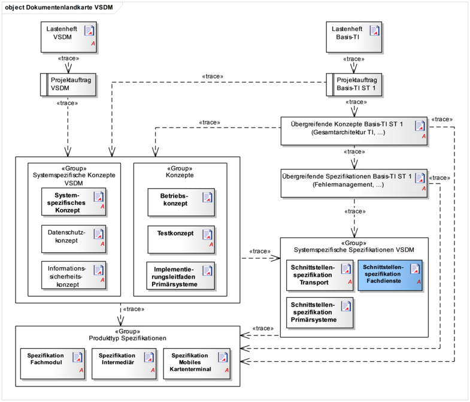
Abbildung 1 – Dokumentenhierarchie im Projekt VSDM
In der Schnittstellenspezifikation Fachdienste werden einleitend in Kapitel 1 die Zielsetzung des Dokumentes, die notwendigen Grundlagen und die gewählten Methoden dargestellt.
Kapitel 2 enthält eine Zusammenfassung der allgemeinen Festlegungen zu den in diesem Dokument spezifizierten Schnittstellen.
Die Spezifikation der Operation der UFS-Schnittstelle erfolgt in Kapitel 3 und in Kapitel 4 erfolgt die Spezifikation für die Operationen der CCS-Schnittstelle.
Zur Verdeutlichung der Kommunikation im Rahmen der Aktualisierung einer eGK wird in Kapitel 5 der prinzipielle Ablauf einmal dargestellt und die Kartenkommandos, die für eine Aktualisierung notwendig sind werden beschrieben.
Die Ausgangsanforderungen dieser Spezifikation und deren Zusammenhang zu den Anforderungen aus dem übergeordneten Konzepten und Spezifikationen werden tabellarisch in Anhang B dargestellt.
Das Dokument richtet sich an Hersteller und Anbieter der VSDM-Fachdienste und Fachmodule sowie an Hersteller und Anbieter von Produkttypen, die hierzu eine Schnittstelle besitzen.
Dieses Dokument enthält normative Festlegungen zur Telematikinfrastruktur des Deutschen Gesundheitswesens. Der Gültigkeitszeitraum der vorliegenden Version und deren Anwendung im Zulassungsverfahren wird durch die gematik GmbH in gesonderten Dokumenten (z.B. Dokumentenlandkarte, Produkttypsteckbrief, Leistungsbeschreibung) festgelegt und bekannt gegeben.
Schutzrechts-/Patentrechtshinweis
Die nachfolgende Spezifikation ist von der gematik allein unter technischen Gesichtspunkten erstellt worden. Im Einzelfall kann nicht ausgeschlossen werden, dass die Implementierung der Spezifikation in technische Schutzrechte Dritter eingreift. Es ist allein Sache des Anbieters oder Herstellers, durch geeignete Maßnahmen dafür Sorge zu tragen, dass von ihm aufgrund der Spezifikation angebotene Produkte und/oder Leistungen nicht gegen Schutzrechte Dritter verstoßen und sich ggf. die erforderlichen Erlaubnisse/Lizenzen von den betroffenen Schutzrechtsinhabern einzuholen. Die gematik GmbH übernimmt insofern keinerlei Gewährleistungen.
Die Transportschnittstelle zwischen den Fachdiensten VSDM (UFS, VSDD, CMS) und dem Fachmodul VSDM befindet sich nach dem OSI-Schichtenmodell in der Anwendungsschicht. Die Transportschnittstelle selbst wird dabei in die zwei Ebenen Nachrichtenebene und Anwendungsebene unterteilt. Zur Anwendungsebene, die in diesem Dokument behandelt wird, zählen die fachdienstespezifischen Daten (SOAP-Body).
Das Dokument [gemSpec_SST_VSDM] spezifiziert die Schnittstelle zwischen den Fachdiensten VSDM und dem Fachmodul VSDM auf Nachrichtenebene und bezieht sich auf die Header-Information in der SOAP-Nachricht.
Festlegungen zu tiefer liegenden Schichten im OSI-Modell und übergreifenden Themen, wie Prüfung von Zertifikaten, zulässige Algorithmen und Details der sicheren Kommunikation, werden durch Spezifikationen der Basis-TI getroffen.
Festlegungen zur Ausführung von Anwendungsfällen und Vorgaben zum Betrieb der Fachdienste sind nicht Bestandteil dieser Spezifikation.
Für die Schnittstellen der Fachdienste der Kostenträger besteht Bestandsschutz. Nur in begründeten Fällen darf in Abstimmung mit den Kostenträgern davon abgewichen werden. Daher werden die Festlegungen bezüglich der Fehlerstruktur und Transport der fachlichen Inhalte aus dem Releasestand 4.0.0 in die Dokumente der Pflichtenheftphase übernommen.
Das Transportprotokoll Telematik Transport Details (TTD) ist gemäß Entscheidung der Basis-TI kein übergreifendes Protokoll, das von allen Fachanwendungen der TI zwingend zu verwenden ist. Zukünftig verantworten die Fachanwendungen das Kommunikationsprotokoll selbst. Um die Komplexität zu reduzieren, wird in Abstimmung mit den Kostenträgern in der Fachanwendung VSDM auf die TTD als Transportprotokoll verzichtet.
Stattdessen werden für die Fachdienste VSDM nur die Elemente zur Lokalisierung und Sessioninformation übernommen sowie die Standard SOAP-Struktur verwendet.
Anforderungen als Ausdruck normativer Festlegungen werden durch eine eindeutige ID in eckigen Klammern sowie die dem RFC 2119 [RFC2119] entsprechenden, in Großbuchstaben geschriebenen deutschen Schlüsselworte MUSS, DARF NICHT, SOLL, SOLL NICHT, KANN gekennzeichnet.
Sofern im Text des systemspezifischen Konzepts auf die Ausgangsanforderungen verwiesen wird, erfolgt dies in eckigen Klammern, z.B. [VSDM-A_2093]. Dies tritt häufig bei Modellen und Tabellen auf, da viele Umsetzungsanforderungen genau auf eine dieser methodischen Beschreibungen verweisen. Wird auf Eingangsanforderungen verwiesen, erfolgt dies in runden Klammern, z.B. (VSDM-A_303).
In Anhang B1 dieses Dokuments werden die Lastenheftanforderungen aufgelistet, die in diesem Ergebnisdokument berücksichtigt sind. In der Spalte "umgesetzt durch" befinden sich die eindeutigen Referenzen auf die dazu erarbeiteten Umsetzungsanforderungen. In Anhang B2 stehen die Umsetzungsanforderungen mit ihrer Beschreibung und dem entsprechenden Vorgänger.
Die zu einer Eingangsanforderung referenzierte Umsetzungsanforderung spiegelt die erste Ebene des Anforderungsbaumes wieder. Die Verfeinerung dieser Anforderungen zu einem vollständigen Anforderungsbaum erfolgt in einem Anforderungsmanagement-Tool und nicht im vorliegenden Dokument.
Das vorliegende Dokument spezifiziert die Schnittstelle zwischen den Fachdiensten VSDM und dem Fachmodul VSDM. Zu den Fachdiensten VSDM zählen der Update Flag Service (UFS), das Kartenmanagementsystem (CMS) und der Versichertenstammdatendienst (VSDD). Die Fachdienste CMS und VSDD werden in Bezug auf ihre Schnittstelle als "Card Communication Service" (CCS) zusammengefasst.
Die Spezifikation der Schnittstelle des "Update Flag Service" und des "Card Communication Service" umfasst die Definition mehrerer Operationen. Ein Dienst, der eine dieser Schnittstellen anbietet, muss diese spezifizierten Operationen vollständig implementieren.
In Kapitel 3 und Kapitel 4 sind die Operationen der Schnittstellen detailliert beschrieben. Zu jeder Operation gibt es ein Request- und ein Response-Element. Die Request- und Response-Nachrichten, der von den Diensten implementierten Operationen, müssen zu den definierten Schemas konform sein.
Zusätzlich zu den hier getroffenen Festlegungen gelten für die hier beschriebenen Schnittstellen alle übergreifenden Festlegungen aus der Spezifikation [gemSpec_SST_VSDM].
Der Name eines Request-Elementes kann eindeutig einer Operation zugeordnet werden, die bei dem Dienst ausgeführt werden soll.
Ein Response-Element besteht aus dem Namen des zugehörigen Request-Elementes und dem Suffix Response.
In dieser Spezifikation werden keine eigenen Header-Elemente definiert. Es werden die Header-Elemente entsprechend der Spezifikation [gemSpec_SST_VSDM] verwendet. Für jeden Request, als auch für die Response, sind operationsspezifisch Header-Elemente festgelegt.
Zur besseren Verständlichkeit werden in den folgenden Kapiteln XML-Schemas oder Teile hieraus grafisch dargestellt. Die Visualisierungen wurden aus den zugrunde liegenden Schemas generiert. Maßgeblich für die exakte Definition eines Elementes ist nicht die Visualisierung, sondern jeweils das zugrunde liegende Schema [UFS.wsdl] [CCS.wsdl].
Der Update Flag Service (UFS) bündelt den ggf. vorliegenden Aktualisierungsbedarf mehrerer Dienste (CMS und VSDD) und gibt über die UFS-Schnittstelle Auskunft zum Aktualisierungsbedarf. Damit entfällt der Aufwand, bei jedem Kontakt der eGK mit der Telematikinfrastruktur jeden Fachdienst, der potentiell auf die eGK zugreifen möchte, explizit nach einer Aktualisierung zu fragen. Der UFS optimiert somit diesen Ablauf.
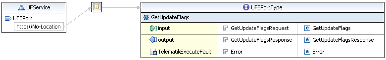
Abbildung 2 – Darstellung der UFS-WSDL
Wenn ein Fachdienst eine Aktualisierung der eGK beabsichtigt, setzt dieser Fachdienst ein entsprechendes Update Flag im UFS. Sobald die eGK anschließend, z. B. im Rahmen eines Arztbesuches mit dem UFS in Kontakt tritt, zeigt dieser den Aktualisierungsbedarf an und es wird ggf. die Aktualisierung initiiert.
Wenn eine Optimierung von Aktualisierungen möglich ist, indem mehrere Aktualisierungen zusammen in einem Vorgang durchgeführt werden, nimmt der Fachdienst diese Optimierung vor, indem er die Änderungen zu einem Aktualisierungsvorgang zusammenführt. Fallen zum Beispiel mehrere Änderungen der VSD an, sollen die Änderungen in einer Aktualisierung mit dem ServiceType VSD zusammenfasst werden. [VSDM-A_2751]
Die Schnittstelle zum Hinzufügen und Entfernen eines Update Flags am UFS durch einen Fachdienst ist nicht Teil der Fachanwendung VSDM. Die Schnittstelle liegt in der Verantwortung der Fachdienstbetreiber und kann von diesen eigenverantwortlich implementiert werden.
In der Tabelle 1 sind die allgemeinen Werte der Schnittstelle aufgeführt. Diese Werte werden unter anderem für die Kodierung der Endpunkt-Adresse der Schnittstelle verwendet.
Tabelle 1: Tab_SST_FD_01 – Allgemeine Werte der UFS Schnittstelle
| Element |
Wert |
|---|---|
| Provider-Kennung |
Kostenträgerkennung |
| ServiceType |
UFS |
| Schnittstellen-Version |
2.0 |
Mit der Operation GetUpdateFlags können Update Flags zu einer bestimmten ICCSN ausgelesen werden. Ein vorhandenes Update Flag muss eindeutig über das Tupel ICCSN, Service-Localization und Update-Identifier identifiziert werden können. [VSDM-A_2280] [VSDM-A_2281]
Die Antwortnachricht der Operation enthält die Prüfziffer, wenn kein Aktualisierungsauftrag für den VSDD vorliegt, damit das Fachmodul den Prüfungsnachweis erstellen kann. Der Prüfungsnachweis dient als Nachweis einer durchgeführten Aktualisierungsanfrage der VSD. Das bedeutet, dass der UFS auch eine Prüfziffer sendet, wenn nur Aktualisierungsaufträge für das CMS vorliegen, z.B. zum Aktivieren der Gesundheitsanwendung. [VSDM-A_2287-*]
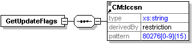
Abbildung 3 – Element GetUpdateFlags
Tabelle 2: Tab_SST_FD_52 – Element GetUpdateFlags [VSDM-A_2310]
| Bezeichnung |
GetUpdateFlags |
| Beschreibung |
Operations-Element des Request der Operation GetUpdateFlags. |
| Datentyp |
complexType |
Tabelle 3: Tab_SST_FD_53 – Element Iccsn [VSDM-A_2310]
| Bezeichnung |
Iccsn |
| Beschreibung |
Der Inhalt des Elements ICCSN ist das Suchkriterium, für das alle zugehörigen Update Flags ausgelesen werden sollen. |
| Datentyp |
string |
| Feldlänge |
20 |
| Wertebereich |
80276[0-9]{15} |
Damit ein Intermediär auf Nachrichtenebene eine Lokalisation des Fachdienstes vornehmen und der Fachdienst die Lokalisation prüfen kann, wird zusätzlich zu den fachlichen Daten das ServiceLocalization-Element gemäß [gemSpec_SST_VSDM] als SOAP-Header übertragen. Die Elemente des ServiceLocalization-Header müssen vom Fachmodul entsprechend der Tabelle 4 gesetzt werden. Die Werte des ServiceLocalization-Header müssen auf Korrektheit geprüft werden, damit von dem Intermediär fehlgeleitete Nachrichten erkannt und abgewiesen werden.
Tabelle 4: Tab_SST_FD_02 – Elemente des ServiceLocalization-Header für die Operation GetUpdateFlags [VSDM-A_2282] [VSDM-A_2283]
| Element |
Wert |
|---|---|
| ServiceType |
„UFS“ |
| ProviderId |
Die 9-stellige Kostenträgerkennung. Der Wert wird aus dem Feld organizationalUnitName im Subject Distinguished Name des C.CH.AUTZertifikates des Versicherten auf der eGK ermittelt. Der Wert erlaubt die eindeutige Zuordnung des Kostenträgers des Versicherten zu einem von diesem Kostenträger betriebenen Dienst. |
Diese Response liefert eine Liste aller Update Flags zu einer bestimmten ICCSN. Die Reihenfolge der Update Flags in dieser Liste gibt die Reihenfolge vor, in der die zugehörigen Vorgänge angestoßen werden müssen.
Optionale Aktualisierungen sind derzeit nicht vorgesehen. Falls in der jetzigen Version optionale Aktualisierungen eingestellt werden, sollen diese ausgelassen werden (siehe hierzu das Element UpdatePriority). Für die tatsächlich angestoßenen, nicht optionalen Aktualisierungen ist die Reihenfolge aber bindend. [VSDM-A_2285] [VSDM-A_2286]
Alle in dieser Liste direkt hintereinander stehenden Update Flags zur gleichen Service-Localization müssen einzeln durch Aufrufe der Operation PerformUpdates durchgeführt werden.
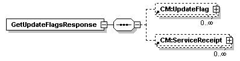
Abbildung 4 – Element GetUpdateFlagsResponse
Tabelle 5: Tab_SST_FD_03 – Element GetUpdateFlagsResponse
| Bezeichnung |
GetUpdateFlagsResponse |
| Beschreibung |
Operations-Element der Response der Operation GetUpdateFlags. |
| Datentyp |
complexType |
Tabelle 6: Tab_SST_FD_04 - Element UpdateFlag
| Bezeichnung |
UpdateFlag |
| Beschreibung |
Ein UpdateFlag-Element inklusive seiner Unterelemente entspricht jeweils einem Aktualisierungsauftrag. |
| Datentyp |
complexType |
Tabelle 7: Tab_SST_FD_05 - Element ServiceReceipt
| Bezeichnung |
ServiceReceipt |
| Beschreibung |
Ein ServiceReceipt-Element ist angegeben, wenn kein Aktualisierungsauftrag für den VSDD vorliegt. |
| Datentyp |
complexType |
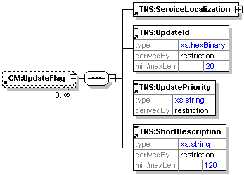
Abbildung 5 – Element UpdateFlag
Tabelle 8: Tab_SST_FD_06 – Element ServiceLocalization [VSDM-A_2288]
| Bezeichnung |
ServiceLocalization |
| Beschreibung |
Mit dem Element ServiceLocalization wird angegeben, bei welchem Fachdienst ein zugehöriger Vorgang angestoßen werden soll. Die Unterelemente von ServiceLocalization müssen die gleichen Werte besitzen, mit denen der Fachdienst registriert ist. |
| Datentyp |
complexType |
Tabelle 9: Tab_SST_FD_07 – Element UpdateId
| Bezeichnung |
UpdateId |
| Beschreibung |
Das Element UpdateId ist ein Identifier (Update-Identifier), mit dem mehrere Update Flags unterschieden werden können, die zur gleichen ICCSN gehören und die gleiche ServiceLocalization besitzen. Der Update-Identifier wird dem Fachdienst bei der Initiierung der Kommunikation zwischen eGK und Fachdienst (Operation PerformUpdates) übergeben, so dass der Fachdienst den durchzuführenden Vorgang identifizieren kann. |
| Datentyp |
hexBinary |
| Feldlänge |
20 |
Tabelle 10: Tab_SST_FD_08 – Element UpdatePriority
| Bezeichnung |
UpdatePriority |
| Beschreibung |
Das Element UpdatePriority (Update-Priorität) gibt an, ob der zum Update Flag zugehörige Vorgang zwingend angestoßen werden muss (MANDATORY) oder ob der Anstoß optional ist (OPTIONAL). Die Auswahl, ob für ein einzelnes Update Flag mit der Priorität OPTIONAL das Update tatsächlich durchgeführt oder ausgelassen wird, erfolgt durch das aufrufende System. |
| Datentyp |
string |
| Wertebereich |
MANDATORY | OPTIONAL |
Tabelle 11: Tab_SST_FD_09 – Element ShortDescription
| Bezeichnung |
ShortDescription |
| Beschreibung |
Das Element ShortDescription enthält einen kurzen Text, der den vom Fachdienst durchzuführenden Vorgang beschreibt. Diese Beschreibung soll für die Anzeige des Vorganges im Primärsystem verwendet werden. Für die drei Pflicht-Updates VSD aktualisieren, eGK sperren und entsperren sollen diese Texte genutzt werden:
|
| Datentyp |
string |
| Feldlänge |
120 |
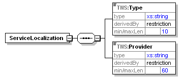
Abbildung 6 – Element ServiceLocalization
Tabelle 12: Tab_SST_FD_10 – Element Type [VSDM-A_2288]
| Bezeichnung |
Type |
| Beschreibung |
Für ein UpdateFlag-Element enthält das Element Type den Typ des Fachdienstes, an den eine Anfrage gerichtet ist. Für ein ServiceReceipt-Element enthält das Element Type den Typ des Fachdienstes, der die Prüfziffer generiert. Jede Fachanwendung definiert das für die Dienste gültige Kürzel. |
| Datentyp |
string |
| Wertebereich |
VSD | CMS für UpdateFlag-Element UFS für ServiceReceipt-Element |
Tabelle 13: Tab_SST_FD_11 – Element Provider [VSDM-A_2288]
| Bezeichnung |
Provider |
| Beschreibung |
Das Feld Provider dient der Servicelokalisierung und identifiziert den Provider. Für die Fachanwendung VSDM wird die Kostenträgerkennung des Zertifikats des Versicherten auf der eGK genutzt. Der angegebene Wertebereich wird nicht über das Schema festgelegt, sondern der Empfänger muss bei der Verarbeitung die Lokalisierung prüfen. |
| Datentyp |
string |
| Feldlänge |
9 |
| Wertebereich |
[0-9] |
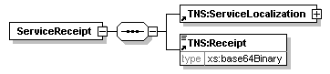
Abbildung 7 – Element ServiceReceipt-Element
Tabelle 14: Tab_SST_FD_13 – Element ServiceLocalization [VSDM-A_2288]
| Bezeichnung |
ServiceLocalization |
| Beschreibung |
Mit dem Element ServiceLocalization wird angegeben, zu welchem Fachdienst die zugehöriger fachdienstspezifische Prüfziffer gehört. |
| Datentyp |
complexType |
Die Unterelemente Type und Provider sind bereits im Zusammenhang mit dem Element UpdateFlag beschrieben.
Tabelle 15: Tab_SST_FD_14 – Element Receipt [VSDM-A_2287-*]
| Bezeichnung |
Receipt |
| Beschreibung |
Dieses Element beinhaltet die Prüfziffer des Fachdienstes als eine Base64Binary-kodierte Folge von bis zu 65 Bytes. Das Format der der Prüfziffer ist in A_23453-* beschrieben. Es erfolgt keine Auswertung des Receipts durch das Fachmodul des Konnektors. |
| Datentyp |
base64Binary |
Die Beschreibung der Fehlerbehandlung und Struktur der gematik SOAP Faults erfolgt in der Spezifikation „Schnittstellenspezifikation Transport VSDM“ [gemSpec_SST_VSDM]. Für die hier beschriebene Schnittstelle der Anwendungsebene erfolgt lediglich die Festlegung der Fehlercodes auf Anwendungsebene (s. Tabelle 16).
Der ComponentType ist für alle an dieser Schnittstelle auftretenden, auch übergreifenden Fehlercodes gemäß [gemSpec_SST_VSDM], Fehler „UFS“. Da er für alle aufgeführten Fehlercodes gilt, wird er nicht extra pro Fehlercode angegeben. [VSDM-A_2329]
Tabelle 16: Tab_SST_FD_15 – Fehlercodes der UFS-Schnittstelle [VSDM-A_2290] [VSDM-A_2291] [VSDM-A_2292]
| Code |
ErrorType |
Severity |
ErrorText |
Befüllung Detail |
Auslösende Bedingung |
|---|---|---|---|---|---|
| 11101 | Technical |
Fatal |
Für die eGK mit der angegebenen ICCSN ist der aufgerufene Dienst nicht zuständig. |
DARF NICHT verwendet werden |
Für die eGK mit der angegebenen ICCSN ist dieser UFS nicht zuständig. Es muss die, in der ICCSN enthaltene, Issuer Identification Number (IIN) geprüft werden. Eine IIN ist dann falsch, wenn sie nicht den/die Issuer (Kartenherausgeber) bezeichnet, für den/die dieser UFS betrieben wird. Eine darüber hinausgehende Überprüfung der ICCSN ist optional, um auch (einfache) UFS-Implementierungen zu ermöglichen, bei denen der UFS nur genau diejenigen ICCSN kennt, für die Update Flags existieren. |
| 11999 | nicht vorgegeben |
nicht vorgegeben |
Ein nicht spezifizierter Fehler ist aufgetreten, zu dem weitere Details im Dienst protokolliert worden sind. |
Kurzbeschrei- bung des Fehlers |
Der aufgetretene Fehler ist keinem spezifizierten Fehlercode zuzuordnen. Weitere Details zum Fehler sind vom Dienst protokolliert worden. |
Für einen Fehler, der keinem bereits spezifizierten Fehlercode zugeordnet ist, soll der Fehlercode 11999 angegeben werden. Dieser Fehlercode soll nur in Ausnahmefällen verwendet werden.
Neben den in der Tabelle 16 aufgeführten Fehlercodes können die in der Tabelle 17 aufgeführten Fehlercodes vom Fachdienst verwendet werden, sofern das eingesetzte Webservice-Framework diesen Fehler nicht bereits erkennt und mit einem SOAP Fault darauf reagiert.
Tabelle 17: Tab_SST_FD_16 – Optionale Fehlercodes der UFS-Schnittstelle [VSDM-A_2293]
| Code |
ErrorType |
Severity |
ErrorText |
Befüllung Detail |
Auslösende Bedingung |
|---|---|---|---|---|---|
| 11148 |
Technical |
Fatal |
Die Payload ist nicht konform zum XML-Schema. |
DARF NICHT verwendet werden |
Im Payload ist kein zum XML-Schema konformer Request GetUpdateFlags angegeben. |
Erhält das Fachmodul ein oder mehrere Aktualisierungsaufträge (Update Flags), kann das Fachmodul diese Aktualisierungen über die Operation PerformUpdates der Schnittstelle CCS initiieren und durchführen. Beim ersten Aufruf übergibt das Fachmodul dem Dienst einen Update-Identifier (Bestandteil der Update Flags). Der Fachdienst ordnet den Update-Identifier dem durchzuführenden Vorgang zu. [VSDM-A_2294] [VSDM-A_2295]
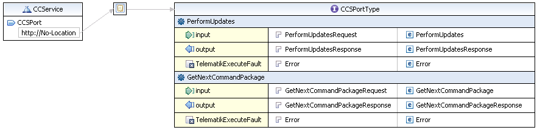
Abbildung 8 – Darstellung der CCS-WSDL
Damit der Fachdienst die folgenden Nachrichten nach dem initiierenden Aufruf zuordnen kann, wird vom Dienst eine Sessioninformation erstellt und in der ersten Antwortnachricht an das Fachmodul übergeben. Diese Sessioninformation wird in den Aufrufen der Folgenachrichten angegeben. [VSDM-A_2297] [VSDM-A_2298]
Die Schnittstelle ermöglicht den Fachdiensten beliebige Kartenkommandos zur eGK zu senden. Zwischen dem Fachdiensten und der eGK wird ein Trusted Channel aufgebaut, über den die eigentliche Aktualisierung erfolgt. Aus diesem Grund wird für den Auf- und Abbau des Trusted Channels sowie für alle Aktionen innerhalb des Trusted Channels auf die Anwendung von zusätzlichen nachrichtenbasierten Sicherheitsmechanismen verzichtet. Der Ablauf zur Aktualisierung einer eGK wird in Kapitel 5 verdeutlicht. [VSDM-A_2302] [VSDM-A_2999]
Prinzipiell sollen die Fachdienste aus Performancegründen bei einer Aktualisierung der Stammdaten immer nur die VSD-Container aktualisieren, für die auch Änderungen vorliegen. Eine Ausnahme diesbezüglich besteht dann, wenn für die Aktualisierung des zu ändernden Containers eine neue Schemaversion verwendet wird. In diesem Fall müssen alle VSD-Container aktualisiert werden, um sicherzustellen, dass immer in allen drei VSD-Containern (PD, VD und GVD) die Daten in derselben Schemaversion vorliegen. [VSDM-A_2546]
Zum Abschluss einer erfolgreichen Aktualisierung der VSD erstellt der Fachdienst VSDD eine Prüfziffer, die vom Fachmodul in den Prüfungsnachweis aufgenommen wird. Der Prüfungsnachweis dient als Nachweis einer durchgeführten Aktualisierungsanfrage der VSD. Der Fachdienst CMS hingegen soll keine Prüfziffer erstellen, da das Fachmodul die Prüfziffer des CMS nicht nutzt. [VSDM-A_2341-*] [VSDM-A_2342]
Bei Änderung von Versichertenstammdaten muss der Fachdienst mit einem vorhergehenden Kommando den Transaktionsstatus auf der eGK auf ‚1’ setzen. Nach den Kommandos zum Ändern der Daten muss ein Kommando zum Zurücksetzen des Transaktionsstatus auf ‚0’ folgen. [VSDM-A_2961]
In der Tabelle 18 sind die allgemeinen Werte der Schnittstelle aufgeführt. Diese Werte werden unter anderem für die Kodierung der Endpunkt-Adresse der Schnittstelle verwendet.
Tabelle 18: Tab_SST_FD_17 – Allgemeine Werte der CCS Schnittstelle
| Element |
Wert |
|---|---|
| Provider-Kennung |
Kostenträgerkennung |
| ServiceType |
VSD | CMS |
| Schnittstellen-Version |
2.0 |
Die Operation PerformUpdates initiiert die Kommunikation zwischen Dienst und eGK. Durch die Übermittlung eines oder mehrerer Update-Identifier an den Dienst, wird beim Dienst der durchzuführende Vorgang angestoßen. In der Response zu dieser Operation wird vom Dienst bereits das erste Kommando-Paket angegeben. Die Chipkarten-Kommandos werden von dieser Spezifikation nicht beschränkt. Allerdings sind derzeit nur VSD-Aktualisierungen und die Sperrung der Gesundheitsanwendung vorgesehen (s. Kapitel 5).
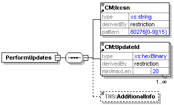
Abbildung 9 – Element PerformUpdates
Tabelle 19: Tab_SST_FD_18 – Element PerformUpdates [VSDM-A_2308]
| Bezeichnung |
PerformUpdates |
| Beschreibung |
Operations-Element des Request der Operation PerformUpdates. |
| Datentyp |
complexType |
Tabelle 20: Tab_SST_FD_19 – Element Iccsn [VSDM-A_2308]
| Bezeichnung |
Iccsn |
| Beschreibung |
Das Element Iccsn enthält die ICCSN der eGK, für die Aktualisierungen durchgeführt werden sollen. Die Feldlänge und der Wertebereich des Elements ist im Kapitel 3.1.1 spezifiziert. |
| Datentyp |
string |
| Feldlänge |
20 |
| Wertebereich |
80276[0-9]{15} |
Tabelle 21: Tab_SST_FD_20 – Element UpdateId [VSDM-A_2308]
| Bezeichnung |
UpdateId |
| Beschreibung |
Der Spezifikation des Elements erfolgt im Kapitel 3.1.3. |
| Datentyp |
hexBinary |
| Feldlänge |
20 |
Tabelle 22: Tab_SST_FD_21 – Element AdditionalInfo [VSDM-A_2308] [VSDM-A_2335] [VSDM-A_2314]
| Bezeichnung |
AdditionalInfo |
| Beschreibung |
In der jetzigen Version darf das Element nicht verwendet werden. Mit dem optionalen Element AdditionalInfo könnten zukünftig zusätzliche fachdienstspezifische Informationen übergeben werden, die für die Ausführung der Operation PerformUpdates erforderlich sind. |
| Datentyp |
- |
Damit der Fachdienst die Lokalisierung durch den Intermediär prüfen kann, wird das ServiceLocalization-Element gemäß [gemSpec_SST_VSDM] im SOAP-Header übertragen. Die Elemente des ServiceLocalization-Header müssen entsprechend der Tabelle 23 gesetzt werden.
Tabelle 23: Tab_SST_FD_22 – Elemente des ServiceLocalization-Header der Operation PerformUpdates [VSDM-A_2303] [VSDM-A_2305]
| Element |
Wert |
|---|---|
| ServiceType |
Der Wert muss aus dem zugehörigen Update Flag entnommen werden. |
| ProviderId |
Der Wert muss aus dem zugehörigen Update Flag entnommen werden. |
Die Response enthält für alle abgeschlossenen Aktualisierungsvorgänge eine Liste von UpdatePerformed-Elementen, welche die erfolgreiche Durchführung der Updates bestätigen, und das Element CommandPackage mit Chipkartenbefehlen zur Durchführung einer weiteren Aktualisierung der eGK. Sind alle Aktualisierungen abgeschlossen, enthält die Response anstelle des Elements CommandPackage das Element Close. [VSDM-A_2317]
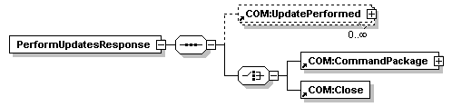
Abbildung 10 – Element PerformUpdatesResponse
Tabelle 24: Tab_SST_FD_23 – Element PerformUpdatesResponse
| Bezeichnung |
PerformUpdatesResponse |
| Beschreibung |
Operations-Element der Response der Operation PerformUpdates. |
| Datentyp |
complexType |
Tabelle 25: Tab_SST_FD_24 – Element UpdatePerformed [VSDM-A_2315]
| Bezeichnung |
UpdatePerformed |
| Beschreibung |
Für jede erfolgreich durchgeführte Aktualisierung wird ein UpdatePerformed-Element mit den zugehörigen Elementen angegeben. |
| Datentyp |
complexType |
Tabelle 26: Tab_SST_FD_25 – Element CommandPackage [VSDM-A_2316]
| Bezeichnung |
CommandPackage |
| Beschreibung |
Im Element CommandPackage können ein oder mehrere Kommandos für die Aktualisierung der eGK als Paket übertragen werden. Es dürfen nur Kommandos zur Aktualisierung der VSD und zum Sperren/Entsperren der DF.HCA durchgeführt werden. Eine maximale Kommando-Gesamtgröße eines Paketes ist nicht vorgegeben. |
| Datentyp |
complexType |
Tabelle 27: Tab_SST_FD_26 – Element Close
| Bezeichnung |
Close |
| Beschreibung |
Das Element Close wird angegeben, wenn kein (weiteres) Kommando-Paket für die eGK ausgeführt werden soll. Das Element Close hat keinen Inhalt. |
| Datentyp |
- |
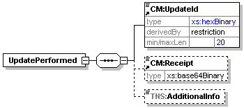
Abbildung 11 – Element UpdatePerformed
Tabelle 28: Tab_SST_FD_27 – Element UpdateId [VSDM-A_2315]
| Bezeichnung |
UpdateId |
| Beschreibung |
Das Element UpdateId enthält den Update-Identifier des Vorganges, der abgeschlossen wurde. Die weitere Beschreibung des Elements erfolgt in dem Kapitel 3.1.3. |
| Datentyp |
hexBinary |
| Feldlänge |
20 |
Tabelle 29: Tab_SST_FD_50 – Element Receipt [VSDM-A_2341-*] [VSDM-A_2315]
| Bezeichnung |
Receipt |
| Beschreibung |
Im Element Receipt wird die servicespezifische Prüfziffer für den erfolgreich durchgeführten Vorgang mitgeliefert. Die weitere Beschreibung des Elements erfolgt in Tab_SST_FD_14. |
| Datentyp |
base64Binary |
Tabelle 30: Tab_SST_FD_28 – Element AdditionalInfo [VSDM-A_2315]
| Bezeichnung |
AdditionalInfo |
| Beschreibung |
In der jetzigen Version darf das Element nicht verwendet werden. Analog zum gleichnamigen Element im Request umfasst das optionale Element AdditionalInfo-Elemente, mit denen zukünftig zusätzliche fachdienstspezifische Informationen übergeben werden könnten. |
| Datentyp |
- |
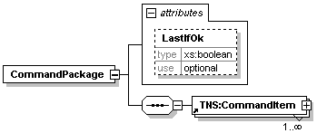
Abbildung 12 – Element CommandPackage
Tabelle 31: Tab_SST_FD_29 – Attribut LastIfOk [VSDM-A_2339] [VSDM-A_2316]
| Bezeichnung |
LastIfOk |
| Beschreibung |
Das optionale Attribut LastIfOk soll mit dem Wert „true“ angegeben werden, wenn die folgende Bedingung erfüllt ist: Dies ist das letzte vom Fachdienst versendete CommandPackage, falls alle Statuscodes, die die eGK zurückliefern wird, mit den in diesem CommandPackage angegebenen erwarteten Statuscodes übereinstimmen. Das Attribut LastIfOk beendet nicht die Kommunikationssequenz, d. h. das Absenden des folgenden Requestes „GetNextCommandPackageRequest“ kann zwar parallelisiert werden, darf aber nicht entfallen. |
| Datentyp |
boolean |
Tabelle 32: Tab_SST_FD_30 – Element CommandItem [VSDM-A_2316]
| Bezeichnung |
CommandItem |
| Beschreibung |
Das Element CommandItem enthält jeweils das auszuführende Kartenkommando und die erwartete Antwort der eGK auf das Kartenkommando. |
| Datentyp |
complexType |
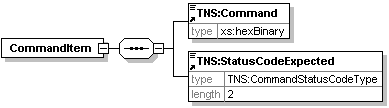
Abbildung 13 – Element CommandItem
Tabelle 33: Tab_SST_FD_31 – Element Command [VSDM-A_2318] [VSDM-A_2316]
| Bezeichnung |
Command |
| Beschreibung |
Das Element Command enthält in hexadezimaler Form eine vollständige Command-APDU für die eGK. Dieses Kommando wird unverändert an die eGK weitergeleitet. Der Aufbau und die Struktur der Kommando-APDUs sind für die Standard-Betriebssystemkommandos in [gemSpec_COS] beschrieben. Durch die Schnittstelle sind die Chipkarten-Kommandos jedoch nicht beschränkt. Eine Übersicht, der für die vorgesehen Aktualisierungen notwendigen Kommandos, ist im Kapitel 5 enthalten. Die im Element Command angegebene Byte-Sequenz darf nicht mehr als 3082 Bytes enthalten. |
| Datentyp |
hexBinary |
Tabelle 34: Tab_SST_FD_32 – Element StatusCodeExpected [VSDM-A_2316]
| Bezeichnung |
StatusCodeExpected |
| Beschreibung |
Das Element StatusCodeExpected gibt den Statuscode an, der in der Antwort der eGK erwartet wird. Durch einen Vergleich mit dem tatsächlich von der eGK zurückgelieferten Statuscode kann hiermit vom Fachmodul eine unerwartete Abweichung erkannt werden (s. 4.2.1). |
| Datentyp |
CommandStatusCodeType |
| Feldlänge |
2 |
In der Response ist die Sessioninformation gemäß [gemSpec_SST_VSDM] im SOAP-Header zu übertragen. Das Element des SessionIdentifier-Headers muss entsprechend der Tabelle 35 gesetzt werden.
Tabelle 35: Tab_SST_FD_33 – Elemente des SessionIdentifier-Header der Operation PerformUpdates
| Element |
Wert |
|---|---|
| ConversationID |
Die Vergabe der ConversationID erfolgt durch den Fachdienst. Erfolgt für einen Aktualisierungsauftrag der Aufruf der Operation PerformUpdates erneut, erzeugt der Fachdienst eine neue ConversationID und behandelt die vorhergehende ConversationID als abgelaufen. |
Das Fachmodul fordert mit der Operation GetNextCommandPackage ein weiteres Kommando-Paket für die eGK an. Vor der ersten Ausführung dieser Operation MUSS die Operation PerformUpdates ausgeführt worden sein.
Im Request für diese Operation werden dem Fachdienst die letzten Antworten der Chipkarte mitgeliefert. Diese Operation MUSS solange wiederholt abgesetzt werden bis vom Dienst durch die Übermittlung des Elements Close in der Response bestätigt wird, dass alle Aktualisierungen beendet sind.
Im Request werden alle Antworten der eGK zu allen ausgeführten Kommandos aus dem letzten Kommando-Paket sequentiell aufgelistet. Liefert die eGK bei der Ausführung der Kommandos eines Kommando-Paketes einen unerwarteten Status-Code zurück, werden keine weiteren Kommandos aus dem Kommando-Paket ausgeführt. In einem solchen Fall, werden alle Antworten, der bis dahin erfolgreich ausgeführten Kommandos einschließlich des Kommandos, bei dem der Statuscode ungleich dem erwarteten Statuscode war, zurückgeliefert. [VSDM-A_2552] [VSDM-A_2553]
Ein Sonderfall bildet hier der Response-Code "63 Cx". Er ist für die Abarbeitung durch das Fachmodul wie ein "90 00" zu betrachten, sollte aber in der Response an den Fachdienst zurückgegeben werden. Die Abarbeitung der Kommando-Pakete wird hier nicht abgebrochen. [VSDM-A_2552]
Wenn die Verbindung zur eGK abbricht, wird hinter dem letzten Element CommandResponse das Element Abort angegeben. Konnte vorher kein Kommando ausgeführt werden, wird nur das Element Abort angegeben. [VSDM-A_3008]
Abbildung 14 – Element GetNextCommandPackage
Tabelle 36: Tab_SST_FD_34 – Element GetNextCommandPackage [VSDM-A_2311]
| Bezeichnung |
GetNextCommandPackage |
| Beschreibung |
Operations-Element des Request der Operation GetNextCommandPackage. |
| Datentyp |
complexType |
Tabelle 37: Tab_SST_FD_35 – Element CommandResponsePackage [VSDM-A_2311]
| Bezeichnung |
CommandResponsePackage |
| Beschreibung |
Im Element CommandResponsePackage können ein oder mehrere Antworten der eGK zu den ausgeführten Kommandos aus dem letzten Kommando-Paket als Paket übertragen werden. Eine maximale Kommando-Gesamtgröße eines Paketes ist nicht vorgegeben |
| Datentyp |
complexType |
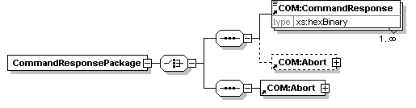
Abbildung 15 – Element CommandResponsePackage
Tabelle 38: Tab_SST_FD_36 – Element CommandResponse [VSDM-A_2311]
| Bezeichnung |
CommandResponse |
| Beschreibung |
Das Element CommandResponse enthält in hexadezimaler Form eine vollständige Response-APDU der eGK. Eine Beschreibung zum Aufbau der Response-APDU ist in [gemSpec_COS] zu finden. |
| Datentyp |
hexBinary |
Tabelle 39: Tab_SST_FD_37 – Element Abort [VSDM-A_2311] [VSDM-A_3009]
| Bezeichnung |
Abort |
| Beschreibung |
Wenn die Verbindung zur eGK abbricht, wird dieses Element angegeben. Die Angabe des Elements beendet die Kommunikationssequenz, d. h. in der zu diesem Request nachfolgende Response darf der Fachdienst keine weiteren Kommandos an die eGK übermitteln, sondern muss die Kommunikation mit dem Element Close beenden. Das Abort Element hat keinen Inhalt. |
| Datentyp |
complexType |
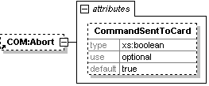
Abbildung 16 – Element Abort
Tabelle 40: Tab_SST_FD_38 – Attribut CommandSentToCard [VSDM-A_2311]
| Bezeichnung |
CommandSentToCard |
| Beschreibung |
Das Attribut CommandSentToCard gibt an, ob das Kommando bereits in Richtung eGK abgeschickt wurde und erst danach die Verbindung abgebrochen ist (CommandSentToCard = true) oder ob die Verbindung abgebrochen ist noch bevor das Kommando in Richtung eGK abgeschickt werden konnte (CommandSentToCard = false). |
| Datentyp |
boolean |
Damit ein Intermediär auf Nachrichtenebene eine Lokalisierung des Fachdienstes vornehmen und der Fachdienst die Lokalisierung prüfen kann, wird zusätzlich zu den fachlichen Daten das ServiceLocalization-Element gemäß [gemSpec_SST_VSDM] als SOAP-Header übertragen. Die Elemente des ServiceLocalization-Header müssen entsprechend der Tabelle 41 gesetzt werden.
Tabelle 41: Tab_SST_FD_39 – Elemente des ServiceLocalization-Header der Operation GetNextCommandPackage [VSDM-A_2321] [VSDM-A_2305]
| Element |
Wert |
|---|---|
| ServiceType |
Der Wert muss aus der zugehörigen Update Flag entnommen werden. |
| ProviderId |
Der Wert muss aus der zugehörigen Update Flag entnommen werden. |
Ebenfalls in dem Request muss das SessionInformation-Element gemäß [gemSpec_SST_VSDM] als SOAP-Header übertragen werden. Das Element des SessionInformation-Header müssen entsprechend der Tabelle 42 gesetzt werden.
Tabelle 42: Tab_SST_FD_40 – Elemente des SessionInformation-Header der Operation GetNextCommandPackage [VSDM-A_2321] [VSDM-A_2322]
| Element |
Wert |
|---|---|
| ConversationID |
Die ConversationID muss der ConversationID aus dem SOAP-Header der Response der Operation PerformUpdates entsprechen. |
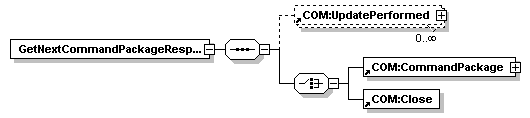
Abbildung 17 – Element GetNextCommandPackageResponse
Die Response entspricht der Response der Operation PerformUpdates. Die Beschreibung der Response-Elemente erfolgt in dem Kapitel 4.1.3. [VSDM-A_2334]
Die genaue Beschreibung der Fehlerbehandlung erfolgt in dem Dokument „Schnittstellenspezifikation Transport VSDM“ [gemSpec_SST_VSDM]. Für die hier beschriebene Schnittstelle erfolgt lediglich die Festlegung der sich aus der Schnittstelle ergebenen Fehlercodes (s. Tabelle 43).
Der ComponentType ist für alle an dieser Schnittstelle auftretenden, auch übergreifenden Fehlercodes gemäß [gemSpec_SST_VSDM], Fehler „CCS“. Da er für alle aufgeführten Fehlercodes gilt, wird er nicht extra pro Fehlercode angegeben. [VSDM-A_2328]
Tabelle 43: Tab_SST_FD_41 – Fehlercodes der CCS-Schnittstelle [VSDM-A_2323] [VSDM-A_2324] [VSDM-A_2325] [VSDM-A_2326] [VSDM-A_2327]
| Code |
Error Type |
Severity |
ErrorText |
Befüllung Detail |
Auslösende Bedingung |
|---|---|---|---|---|---|
| 12101 |
Tech nical |
Fatal |
Für die angegebene Kombination aus ICCSN und Update- Identifier liegt kein Update vor. |
Beschreibung des Fehlers mit Angabe des Update-Identifier |
Die Kombination (ICCSN, Update-Identifier) ist dem Dienst nicht bekannt, d. h. der Dienst kann hierzu keinen Vorgang zuordnen, den er durchführen soll. |
| 12102 |
Tech nical |
Fatal |
Für das angefragte Update ist die Durchführung eines anderen Updates eine Vorbedingung. |
Beschreibung des Fehlers mit Angabe des Update-Identifier |
Der zum Update-Identifier zugehörige Vorgang kann nicht durchgeführt werden, da die Durchführung eines anderen Updates eine Vorbedingung ist. Dieser Fehler kann zum Beispiel auftreten, wenn das Client-System eine vorgegebene Reihenfolge von Update-Identifier nicht einhält. |
| 12103 |
Security |
Fatal |
Die Authentifizierung zwischen Fachdienst und eGK mittels des fachdienst- spezifischen, kartenindividuellen symmetrischen Schlüssels ist fehlgeschlagen. |
Beschreibung des Fehlers mit Angabe des Update-Identifier |
Der zum Update-Identifier zugehörige Vorgang konnte nicht erfolgreich durchgeführt werden, da eine Authentifizierung zwischen Fachdienst und eGK mittels des fachdienstspezifischen kartenindividuellen symmetrischen Schlüssels nicht erfolgreich durchgeführt werden konnte. |
| 12105 |
Technical |
Fatal |
Die eGK ist defekt. |
Beschreibung des Fehlers mit Angabe des Update-Identifier |
Der zum Update-Identifier zugehörige Vorgang konnte nicht erfolgreich durchgeführt werden, da die Chipkarte defekt ist. Dieser Fehler darf nur dann gemeldet werden, wenn der Fachdienst anhand der zurückgemeldeten Statuscodes der Chipkarte einen Defekt festgestellt hat, z. B. einen Speicherfehler. Dieser Fehler darf nicht zurückgemeldet werden, wenn lediglich die Kommunikation vom Client-System mit dem Element Abort (siehe 4.1.3) abgebrochen wurde. |
| 12999 |
nicht vorgegeben |
nicht vorge- geben |
Ein nicht spezifizierter Fehler ist aufgetreten, zu dem weitere Details im Dienst protokolliert worden sind. |
Beschreibung des Fehlers |
Der aufgetretene Fehler ist keinem spezifizierten Fehlercode zuzuordnen. Weitere Details zum Fehler sind vom Dienst protokolliert worden. |
Ist für die Befüllung des Details-Elements die Angabe des Update-Identifier gefordert, muss das Element Detail eine Fehlermeldung im Format „plain“ enthalten, in der dieser Update-Identifier angegeben ist. Dieser Update-Identifier muss derjenige sein, zu dem der zugehörige Aktualisierungsvorgang nicht erfolgreich abgeschlossen werden konnte. [VSDM-A_2331]
Für einen Fehler, der keinem bereits spezifizierten Fehlercode zugeordnet ist, muss der Fehlercode 12999 angegeben werden. Dieser Fehlercode soll nur in Ausnahmefällen verwendet werden.
Bei "Fehlern", die mittels weiterer Command-Packages behoben werden können, darf keine Fehlermeldung vom Fachdienst erzeugt werden, sondern es müssen stattdessen die entsprechenden weiteren CommandPackage-Elemente übertragen werden. [VSDM-A_2332]
Neben den in der Tabelle 43 aufgeführten Fehlercodes können die in der Tabelle 44 aufgeführten Fehlercodes vom Fachdienst verwendet werden, sofern das eingesetzte Webservice-Framework diesen Fehler nicht bereits erkennt und mit einem SOAP Fault darauf reagiert.
Tabelle 44: Tab_SST_FD_42 – Optionale Fehlercodes der CCS-Schnittstelle [VSDM-A_2333]
| Code |
Error Type |
Severity |
ErrorText |
Befüllung Detail |
Auslösende Bedingung |
|---|---|---|---|---|---|
| 12148 |
Technical |
Fatal |
Die Payload ist nicht konform zum XML-Schema. |
DARF NICHT verwendet werden |
Im Payload ist kein zum XML-Schema konformer Request PerformUpdates oder GetNextCommandpackage angegeben. |
Die Fachdienste steuern mittels der Kommandopakete, die innerhalb der Operationen PerformUpdates und GetNextCommandPackage übermittelt werden, die Verarbeitung von Aktualisierungen durch die eGK. Dem Fachmodul fällt nur die Aufgabe zu, die jeweiligen Kartenkommandos vom Fachdienst abzufragen, sie an die eGK weiterzuleiten und die jeweiligen Ergebnisse der Kartenkommandos an den Fachdienst zurückzuliefern. Der Fachdienst organisiert hierbei sowohl den Aufbau des Trusted Channels als auch das Schreiben auf die eGK.
In diesem Kapitel werden exemplarisch die notwendigen Kommandosequenzen für eine Aktualisierung der eGK aufgeführt. Dabei werden sowohl die Kommandosequenz zum Aktualisieren der VSD als auch zum Sperren der Gesundheitsanwendung betrachtet.
Es sollen so wenig wie möglich Kommandopakete pro Aktualisierung entsprechend den Möglichkeiten der Kartensysteme gesendet werden. Die hier angegebenen Sequenzen soll keine Implementierungsvorschrift darstellen. So ist es durchaus vorstellbar, die Anzahl der Kartenbefehle durch eine andere Gruppierung der Kommandopakete zu minimieren.
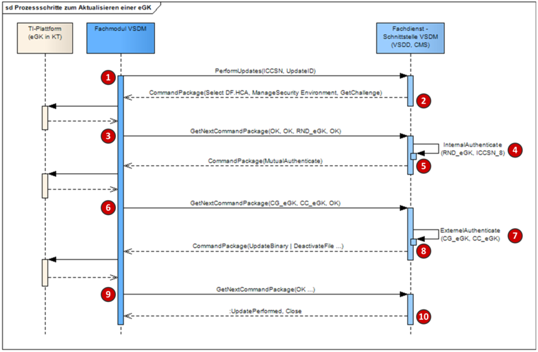
Abbildung 18 - Ablauf "Aktualisierung der eGK"
In der Tabelle 45 sind die in der Abbildung 18 dargestellten Schritte während der Aktualisierung der eGK weiter erläutert. Sofern in den jeweiligen Schritten Kartenbefehle bzw. die Antworten relevant sind, ist in der Spalte APDUs eine Referenz zu der Tabelle aufgeführt, die die Kartenbefehle bzw. Antworten enthält.
Wenn in der Beschreibung eines Schrittes auf einen fachdienstspezifischen Schlüssel verwiesen wird, so wird für diesen die allgemeine Abkürzung „CM“ verwendet. Die Abkürzung „CM“ umfasst dabei jeweils die drei verschiedenen Schlüssel CMS, VSD und VSDCMS. Somit umfasst z.B. die Bezeichnung SK.CM die Schlüssel SK.CMS, SK.VSD und SK.VSDCMS. Welcher dieser Schlüssel konkret in dem Ablauf eingesetzt wird hängt vom jeweiligen Kontext ab.
Tabelle 45: Ablauf „Aktualisierung der eGK“
| Schritt |
Funktion |
Beschreibung |
APDUs |
|---|---|---|---|
| 1 |
PerformUpdates |
Initial wird dem Fachdienst die ICCSN der zu aktualisierenden eGK und die UpdateId als Kennzeichen der durchzuführenden Aktualisierung übermittelt. |
|
| 2 |
PerformUpdates-Response (ManageSecurity-Environment) |
Als Antwort auf den Operationsaufruf PerformUpdates bereitet der Fachdienst das erste Kommandopaket auf. Dieses Kommandopaket beinhaltet den Befehl zum Einstellen des Security Environment (ManageSecurityEnvironment) sowie dem Befehle zum Generieren und Ausgeben einer Zufallszahl (GetChallenge). |
s. Tabelle 46 |
| 3 |
GetNextCommand Package |
Nachdem die im vorherigen Schritt empfangenen Kartenbefehle von der eGK verarbeitet wurden und der von der eGK erhaltenen Statuscode mit dem vom Fachdienst übermittelten Erwartungswert übereinstimmt, wird eine neue Anfrage an den Fachdienst gesandt. Diese Anfrage beinhaltet alle empfangen Antworten der eGK. |
s. Tabelle 47 |
| 4 |
InternalAuthenticate |
Der Fachdienst führt eine interne Authentifikation durch. Dazu berechnet der Fachdienst mit Hilfe seines Master Keys und den letzten 8 Stellen der ICCSN der eGK den geheimen Schlüssel SK.VSD, SK.CMS oder SK.VSDCMS bestehend aus den Teilschlüsseln SK.CM.ENC und SK.CM.MAC für die weiteren Operationen. Mit Hilfe des Teilschlüssels SK.CM.ENC wird die gerade erhaltene Zufallszahl RND_eGK, eine selbst generierte weitere Zufallszahl RND_CM, die letzten 8 Stellen der ICCSN der eGK sowie der ICCSN des Sicherheitsmoduls des Fachdienstes und weitere Daten (KeyDerivationData) verschlüsselt. Über die verschlüsselten Daten (CG_CM) wird zudem ein MAC (CC_CM) unter Nutzung des Schlüssels SK.CM.MAC gebildet. |
|
| 5 |
GetNextCommand PackageResponse (MutualAuthenticate) |
Unter Verwendung der im vorherigen Schritt gebildeten Daten von CG_CM und CC_CM bereitet der Fachdienst den Kartenbefehl MutualAuthenticate auf. Dieser Kartenbefehl wird als einziger Befehl in der Antwort zurückgegeben. |
s. Tabelle 48 |
| 6 |
GetNextCommand Package |
Nachdem der im vorherigen Schritt empfangene Kartenbefehl von der eGK verarbeitet wurde und der von der eGK erhaltene Statuscode mit dem vom Fachdienst übermittelten Erwartungswert übereinstimmt, wird eine neue Anfrage an den Fachdienst gesandt. Diese Anfrage beinhaltet die empfangene Antwort der eGK. Zur Verdeutlichung der Abläufe in der eGK: Die eGK prüft zunächst die Echtheit der Prüfsumme (CC_CM) mit Hilfe des Schlüssels SK.CM.MAC und entschlüsselt anschließend die erhaltenen Daten (CG_CM) unter Nutzung von SK.CM.ENC. Über einen Vergleich der selbst berechneten Zufallszahl RND_eGK mit der gerade entschlüsselten Zufallszahl prüft die eGK die Echtheit des Fachdienstes. Anschließend erzeugt die eGK mit Hilfe der entschlüsselten Daten und zusätzlichen, in der eGK gespeicherten Daten (KeyDerivationData_eGK), einen Session Key, welcher als Grundlage für das nachfolgende Secure Messaging gilt. Entsprechend der in Schritt 4 beschrieben Vorgehensweise berechnet nun auch die Karte ein Datenpaket CG_eGK und stellt diesem eine Prüfsumme CC_eGK nach. CG_eGK und CC_eGK werden im Rahmen der Antwortdaten an den Fachdienst übermittelt. |
s. Tabelle 49 |
| 7 |
ExternelAuthenticate |
Der Fachdienst prüft zunächst die Echtheit der Prüfsumme (CC_eGK) mit Hilfe des Schlüssels SK.CM.MAC und entschlüsselt anschließend die erhaltenen Daten (CG_eGK) unter Nutzung von SK.CM.ENC. Über einen Vergleich der selbst berechneten Zufallszahl RND_CM mit der gerade entschlüsselten Zufallszahl prüft der Fachdienst die Echtheit der eGK. Anschließend erzeugt der Fachdienst mit Hilfe der entschlüsselten Daten und zusätzlichen mit den im Fachdienst vorliegenden Daten (KeyDerivationData_CM) einen Session Key, welcher als Grundlage für das nachfolgende Secure Messaging gilt. |
|
| 8 |
GetNextCommand PackageResponse (Secure Messaging) |
Nach der gegenseitigen Authentifizierung und der durchgeführten Schlüsselvereinbarung können vom Fachdienst mittels Secure Messaging weitere Kartenbefehle sicher übermittelt werden. Handelt es sich bei der Aktualisierung um ein VSD-Update, so werden Befehle zum Setzen des Transaktionsstatus, zur Aktualisierung der Daten und zum Zurücksetzen des Transaktionsstatus gesendet. Für das Sperren bzw. Entsperren der Gesundheitsanwendung wird nur ein entsprechender Befehl benötigt. |
s. Tabelle 50, Tabelle 51, oder Tabelle 53 |
| 9 |
GetNextCommand Package (Aktualisierung beendet) |
Die Aktualisierung der eGK ist beendet, sofern die im vorherigen Schritt empfangenen Kartenbefehle von der eGK verarbeitet wurden und der von der eGK erhaltene Statuscode mit dem vom Fachdienst übermittelten Erwartungswert übereinstimmt. Sofern in der letzten Antwort des Fachdienstes das Flag „LastIfOK“ gesetzt war, ist dem Fachmodul somit bekannt, dass keine weiteren Kartenbefehle folgen und es kann bereits jetzt im Ablauf mit weiteren Kartenbefehlen fortfahren (z.B. durchführen eines C2C). Trotz eines Fortfahrens im Ablauf werden die empfangenen Antworten der eGK an den Fachdienst gesandt. |
Tabelle 52 oder Tabelle 54 |
| 10 |
GetNextCommand PackageResponse (Prüfziffer) |
Durch den Erhalt der letzten Antworten der eGK kann auch der Fachdienst eine erfolgreiche Aktualisierung der eGK feststellen. Daraufhin übermittelt der Fachdienst dem Fachmodul ein UpdatePerformed-Element (enthält die Prüfziffer) und schließt die Aktualisierung somit ab. |
In den nachfolgenden Tabellen ist beispielhaft die direkte Kartenkommunikation bei einer Aktualisierung der eGK zwischen Fachdienst und eGK aufgeführt. Die kursiv dargestellten Kommandos sind optional.
Tabelle 46: PerformUpdatesResponse (ManageSecurityEnvironment)
| Nr. |
APDU |
Name |
Zweck |
|---|---|---|---|
| RP1_01 |
00A4040C |
Select Root |
Initialisierung |
| RP1_02 |
00B09D0000 |
ReadBinary EF.ATR |
APDUBuffer |
| RP1_03 |
00A4040C06D27600000102 |
Select DF.HCA |
Selektion DF.HCA |
| RP1_04 |
002281A406830112800154 |
ManageSecurity Environment |
MSE mit SK.VSD |
| RP1_05 |
0084000008 |
GetChallenge |
Erzeuge Zufallszahl |
Das Kommando RP1_01 ist optional, da diese Initialisierung schon beim Zurücksetzen der Karte vorgenommen werden muss.
Das Kommando RP1_02 ist ebenfalls optional. Es ist nicht notwendig, wenn dem Fachdienst der Inhalt von EF.ATR schon bekannt ist. Anderenfalls jedoch ist es notwendig.
Wenn die eGK-Fähigkeiten um Extended Length und Größe des APDU Buffer bekannt sind, können auch die Kommandos RP1_03ff bereits unter Verwendung dieser Informationen codiert sein.
Anmerkungen:
Ein Auslesen der ICCSN (ReadBinary EF.GDO) ist nicht notwendig, da die ICCSN dem Fachdienst in der Anfrage mitgeteilt wird. Eine von der gesteckten eGK abweichende ICCSN deutet auf einen Fehler der dezentralen TI oder einen Angriff hin. Entsprechend selten tritt dieser Fall ein. Wenn er eintritt, wird dies jedoch beim Aufbau des Secure Messaging bemerkt, da die ICCSN in EF.GDO zur Berechnung der Schlüssel herangezogen wird, welche deshalb nicht zu den im Fachdienst hinterlegten Schlüsseln passen. (Dabei gilt die Annahme, dass die symmetrischen Schlüssel eGK-spezifisch sind)
Ein Auslesen des Transaktions-Flag (ReadBinary EF.StatusVD) ist nicht notwendig, da der VSDD den Status der VSD-Aktualisierung aus den Response-APDUs der eGK ermittelt.
Tabelle 47: GetNextCommandPackage 1
| Nr. |
Result |
Name |
Zweck |
|---|---|---|---|
| RQ2_01 |
´XX…YY || 9000´ |
Inhalt EF.ATR |
APDU Buffer? |
| RQ2_02 |
9000 |
Ergebnis Select DF.HCA |
|
| RQ2_03 |
9000 |
Ergebnis MSE |
|
| RQ2_04 |
´YY…XX || 9000´ |
Zufallszahl |
Aufbau SessionKey |
Die Antwort RQ2_01 ist optional. Sie wird nur erwartet, wenn das Kommando RP1_01 gesendet wurde (s. Tabelle 46).
Tabelle 48: GetNextCommandPackageResponse (MutualAuthenticate)
| Nr. |
APDU |
Name |
Zweck |
|---|---|---|---|
| RP2_01 |
´0082000068 || XX…XX || 00´ |
MutualAuthenticate |
Aufbau SessionKey |
Tabelle 49: GetNextCommandPackage 2
| Nr. |
Result |
Name |
Zweck |
|---|---|---|---|
| RQ3_01 |
´XX…XX || 9000´ |
Ergebnis MutualAuthenticate |
Aufbau SessionKey |
Tabelle 50: GetNextCommandPackageResponse (Gesundheitsanwendung entsperren)
| Nr. |
APDU |
Name |
Zweck |
|---|---|---|---|
| RP3_01 |
´0CA4040C…´ |
Select DF.HCA |
Selektion DF.HCA |
| RP3_02 |
´0C440000…´ |
ACTIVATE |
Aktivieren DF.HCA |
Tabelle 51: GetNextCommandPackageResponse (Gesundheitsanwendung sperren)
| Nr. |
APDU |
Name |
Zweck |
|---|---|---|---|
| RP3_01 |
´0CA4040C…´ |
Select DF.HCA |
Selektion DF.HCA |
| RP3_02 |
´0C040000…´ |
DEACTIVATE |
Deaktivieren DF.HCA |
Tabelle 52: GetNextCommand Package (Gesundheitsanwendung ent-/sperren beendet)
| Nr. |
Result |
Name |
Zweck |
|---|---|---|---|
| RQ4_01 |
´990290008E08…9000´ |
Ergebnis Select DF.HCA |
|
| RQ4_02 |
´990290008E08…9000´ |
Ergebnis De-/Aktivierung |
Tabelle 53: GetNextCommandPackageResponse (Stammdaten aktualisieren)
| Nr. |
APDU |
Name |
Zweck |
|---|---|---|---|
| RP3_01 |
´0CD68C…´ |
UpdateBinary EF.StatusVD |
Setzen Transaktions-Flag (,1’) |
| RP3_02.1 RP3_02.2 … RP3_02.i |
´0CD68100…´ ´0CD600XX…´ … ´0CD6XXYY…´ |
UpdateBinary EF.PD |
EF.PD aktualisieren |
| RP3_03.1 RP3_03.2 … RP3_03.i |
´0CD68200…´ ´0CD600XX…´ … ´0CD6XXYY…´ |
UpdateBinary EF.VD |
EF.VD aktualisieren |
| RP3_04 |
´0CD68300…´´ |
UpdateBinary EF.GVD |
EF.GVD aktualisieren |
| RP3_05 |
´0CD68C…´ |
UpdateBinary EF.StatusVD |
Rücksetzen Transaktions-Flag (,0’) |
Anmerkung:
Im ersten Kommando RP3_01 muss das Transaktions-Flag gesetzt werden. Im letzten Kommando RP3_05 muss das Transaktions-Flag zurückgesetzt werden. Die Anzahl und Reihenfolge der dazwischen stattfindenden Update-Kommandos ist abhängig vom jeweiligen Update. Es sollen auch nur die geänderten Dateien aktualisiert werden. Die Dateigröße von EF.GVD ist so gering, dass es möglich ist, den gesamten Dateiinhalt mit einem Kommando zu beschreiben.
Tabelle 54: GetNextCommand Package (Stammdaten Aktualisierung beendet)
| Nr. |
Result |
Name |
Zweck |
|---|---|---|---|
| RQ4_01 |
´990290008E08…9000´ |
Transaktions-Flag gesetzt (‚1’) |
Beginn der Transaktion |
| RQ4_02.1 RQ4_02.2 … RQ4_02.i |
´990290008E08…9000´ ´990290008E08…9000´ … ´990290008E08…9000´ |
Update EF.PD |
EF.PD aktualisiert |
| RQ4_03.1 RQ4_03.2 … RQ4_03.i |
´990290008E08…9000´ ´990290008E08…9000´ … ´990290008E08…9000´ |
Update EF.VD |
EF.VD aktualisiert |
| RQ4_04 |
´990290008E08…9000´ |
Update EF.GVD |
EF.GVD aktualisiert |
| RQ4_05 |
´990290008E08…9000´ |
Transaktions-Flag gesetzt (‚0’) |
Ende der Transaktion |
Anmerkung:
Am Ende eines erfolgreichen Updates ist das Transaktions-Flag zurückgesetzt (‚0’).
Im Feature "Abruf der E-Rezepte in der Apotheke nach Autorisierung" der Anwendung E-Rezept soll der Anwendungsfall "Onlineprüfung und -aktualisierung" der Anwendung Versichertenstammdatenmanagement (VSDM) genutzt werden, um die Versicherten-ID (10-stelliger unveränderlicher Anteil der Krankenversicherungsnummer (KVNR)) von der in der Apotheke gesteckten eGK zu ermitteln und an den E-Rezept-Fachdienst zu übermitteln, um die offenen E-Rezepte zur Versicherten-ID abzurufen.
Hierbei soll sichergestellt werden, dass der E-Rezept-Fachdienst prüfen kann, dass die Versicherten-ID nicht manipuliert wurde.
Voraussetzung: Es existiert jeweils ein geteiltes Geheimnis (kryptographischer Schlüssel) zwischen einem Fachdienst-Betreiber VSDM und dem E-Rezept-Fachdienst. Dieses gemeinsame Geheimnis bildet die Grundlage für die HMAC-Sicherung der Prüfziffer. Damit kann der E-Rezept-Fachdienst prüfen, ob der Prüfziffer unverändert ist.
Standardablauf:
A_23459
Ein Betreiber eines Fachdienstes VSDM MUSS den HMAC-Sicherungsschlüssel im (betreiberinternen) 4-Augen-Prinzip erzeugen.
<=
Hinweis: weitere Vorgaben zum HMAC-Schlüssel befinden sich in [gemSpec_Krypt#3.18 HMAC-Sicherung der Prüfziffer VSDM].
A_23462
Ein Betreiber eines Fachdienstes VSDM MUSS sicherstellen, dass der HMAC-Schlüssel (vgl. A_23459-*) nur in geschützten Bereich des VSDM-Dienstes aufbewahrt und verwendet wird. Die Maßnahmen für den Schutz (insbesondere für die Sicherung der Vertraulichkeit) MÜSSEN die gleichen sein wie die für den Schutz der im Fachdienst VSDM verarbeiteten Sozialdaten nach § 217f Abs. 4b SGB V. <=
A_23464
Ein Betreiber eines Fachdienstes VSDM MUSS den in A_23459 erzeugten HMAC-Schlüssel zusammen mit folgenden Schlüsselattributen speichern:
A_23465
Ein Betreiber eines Fachdienstes VSDM MUSS den HMAC-Schlüssel des Fachdienstes mindestens einmal jährlich neu erzeugen und an den E-Rezept-Fachdienst zur Einpflege übermitteln. <=
A_23509
Ein Betreiber eines Fachdienstes VSDM DARF nach erfolgreich abgeschlossener Einpflege eines neuen HMAC-Schlüssel im E-Rezept-Fachdienst, alte HMAC-Schlüssel NICHT mehr verwenden. <=
Hinweis: wenn nach einem HMAC-Schlüsselwechsel in dem E-Rezept-Fachdienst dieser neue HMAC-Schlüssel eingebracht worden ist und der alte HMAC-Schlüssel im E-Rezept-Fachdienst gelöscht wurde, dann haben alte HMAC-Schlüssel keinen Schutzbedarf bezüglich Vertraulichkeit mehr.
A_23466
Ein Betreiber eines Fachdienstes VSDM MUSS sicherstellen, dass
{
"betreiberkennung": "A",
"version": "1",
"exp": "2024-02-01",
"encrypted_key": "0160141038f2f9b772621c1cf1b9a71c44fcf24766999392b3d184
950a78c04f444d130be1f4bebd52f5fb9d1897475cac910b4aecbb4855c2f8692ab0f2d165777486
421f7cc26654aeb5cb192118a5cc677cfad855fdc8d77a106f0d198e1147863171866a1e7a80a19c
e528c94eb3884e4be13c4aaaaa48e292f8a1",
"hmac_empty_string": "5ce3ee26f9956e7ef200481a891341760579ddbf566ec9bd43346ef432c2c3cb"
}Hinweis: Bei dem Schlüsselaustausch gibt es nur wenige Betreiber. Die beteiligten Personen sind der gematik bekannt. Ein verschlüsselter Schlüsselaustausch in seiner Organisation und bei der Prüfung der Export-Pakete an verschiedenen Punkten des Transports des Exports wird u. a. von den SDMs der gematik persönlich begleitet.
Die gematik stellt Beispiel-Code für die Erzeugung eines Export-Pakets bereit.
A_23453
Die Fachdienste UFS, VSDD und CMS MÜSSEN für die Erzeugung der Prüfziffer folgende Struktur erstellen:
| Nr | Feld | Format | Länge |
|---|---|---|---|
| 1 | 10-stelliger unveränderlicher Teil der KVNR | alphanummerisch | 10 |
| 2 | aktuelle Unix-Zeit (bspw. "1673551622") | alphanummerisch | 10 |
| 3 | Grund des Updates U – Update Flag Service (UFS) Anfrage V – Versichertenstammdaten (VSD) Update C – Kartenmanagement (CMS) Update |
alphanummerisch | 1 |
| 4 | Kennung des Betreibers Fachdienste VSDM gemäß Liste der gematik |
alphanummerisch | 1 |
| 5 | Für den Betreiber des Fachdienstes spezifische Version des HMAC-Schlüssels | alphanummerisch | 1 |
| 6 | Es wird ein HMAC nach A_23461-* über die konkatenierten Felder 1-5 mittels des betreiberspezifischen Schlüssel berechnet. Dieser berechnete HMAC-Wert (256-Bit) wird auf 192 Bit (also 24 Byte) gekürzt (die ersten 24 Byte des HMAC-Wertes werden verwendet, die restlichen 8 Byte werden verworfen). Dieser gekürzte HMAC-Wert ist das 6-te Datenfeld. |
binär | 24 |
Hinweise:
Die Liste mit den Kennungen der Betreiber wird durch die gematik bereitgestellt.
Die Ausgabelänge der HMAC(SHA-256)-Hashfunktion ist 32 Byte lang. Für die Prüfziffer werden die ersten 24 Byte verwendet. Die restlichen 8 Bytes werden verworfen.
Beispiel:
Sei:
3a8e0064436bf2dbe7ca41ec6f1ed60beec083bc4100633281eb397cb294391c
Dann ist die Bytefolge über die der HMAC berechnet wird:
A1234567891673551622UA1
Diese Bytefolge ist 23 Byte lang. Darüber wird der HMAC-SHA-256 mittels des HMAC-Schlüssels berechnet und davon die ersten 24 Byte genommen (hexdump):
f5f1201426d5841fa4536c83c114be136fc39d56f95e98dd
Beide Zeichenfolgen (23 Byte + 24 Byte) konkateniert und anschließend per Base64 kodiert:
QTEyMzQ1Njc4OTE2NzM1NTE2MjJVQTH18SAUJtWEH6RTbIPBFL4Tb8OdVvlemN0=
Dies ist die Prüfziffer.
| Abkürzung |
Bedeutung |
|---|---|
| C2C |
Card to Card |
| CCS |
Card Communication Service |
| CMP |
Komponentendiagramm |
| CMS |
Card Management System |
| eGK |
elektronische Gesundheitskarte |
| GVD |
Geschützte Versichertendaten |
| HBA |
Heilberufsausweis |
| HCA |
Healthcareapplication |
| HTTP |
Hypertext Transfer Protocols |
| ICCSN |
Integrated Circuit Card Serial Number |
| ID |
Identification |
| IIN |
Issuer Identification Number |
| ISO |
International Organization for Standardization |
| KVNR |
Krankenversicherungsnummer |
| KVK |
Krankenversichertenkarte |
| OCSP |
Online Certificate Status Protocol |
| PD |
Persönliche Versichertendaten |
| SMC (B/A/KTR) |
Security Module Card |
| SSL |
Secure Sockets Layer |
| TI |
Telematikinfrastruktur |
| TLS |
Transport Layer Security, die Vorgängerbezeichnung ist SSL |
| TTD |
Telematik Transport Details |
| UFS |
Update Flag Service |
| SOAP |
Simple Object Access Protocol |
| VD |
Allgemeine Versicherungsdaten |
| VSD |
Versichertenstammdaten |
| VSDD |
Versichertenstammdatendienst |
| VSDM |
Versichertenstammdatenmanagement |
| WSDL |
Web Services Description Language |
| XML |
Extensible Markup Language |
Das Glossar wird als eigenständiges Dokument, vgl. [gemGlossar_TI] zur Verfügung gestellt.
Die nachfolgende Tabelle enthält die Bezeichnung der in dem vorliegenden Dokument referenzierten Dokumente der gematik zur Telematikinfrastruktur. Der mit der vorliegenden Version korrelierende Entwicklungsstand dieser Konzepte und Spezifikationen wird pro Release in einer Dokumentenlandkarte definiert, Version und Stand der referenzierten Dokumente sind daher in der nachfolgenden Tabelle nicht aufgeführt. Deren zu diesem Dokument passende jeweils gültige Versionsnummer entnehmen Sie bitte der aktuellsten, auf der Internetseite der gematik veröffentlichten Dokumentenlandkarte, in der die vorliegende Version aufgeführt wird.
| [Quelle] |
Herausgeber (Erscheinungsdatum): Titel |
|---|---|
| [gemGlossar_TI] |
gematik: Glossar der TI |
| [gemSpec_COS] |
gematik: Spezifikation des Card Operating System (COS) – Elektrische Schnittstelle |
| [gemSpec_Krypt] | gematik: Übergreifende SpezifikationVerwendung kryptographischer Algorithmen in der Telematikinfrastruktur |
| [gemSpec_SST_VSDM] |
gematik: Schnittstellenspezifikation Transport VSDM |
| [gemSysL_VSDM] |
gematik: Systemspezifisches Konzept Versichertenstammdatenmanagement |
| [Quelle] |
Herausgeber (Erscheinungsdatum): Titel |
|---|---|
| [CCS.wsdl] |
Schnittstellendefinition der CCS-Schnittstellen |
| [RFC2119] |
RFC 2119 (März 1997): Key words for use in RFCs to Indicate Requirement Levels S. Bradner, http://tools.ietf.org/html/rfc2109 |
| [UFS.wsdl] |
Schnittstellendefinition der UFS-Schnittstellen |
Tabelle 55: Eingangsanforderungen mit Nachweis der Abdeckung
| AFO-ID |
Quelle |
Beschreibung |
Umgesetzt durch |
| VSDM-A_2101 |
[gemSysL_VSDM] |
Der Fachdienst UFS MUSS eine SOAP-Schnittstelle mit der Operation GetUpdateFlags für das Fachmodul VSDM bereitstellen. |
VSDM-A_2280 VSDM-A_2751 |
| VSDM-A_2102 |
[gemSysL_VSDM] |
Das Fachmodul VSDM MUSS die Aktualisierungsaufträge durch die Operation GetUpdateFlags ermitteln. |
VSDM-A_2285 VSDM-A_2310 |
| VSDM-A_2106 |
[gemSysL_VSDM] |
Die Operation GetUpdateFlags der Schnittstelle des UFS MUSS die Ein- und Ausgangsparameter der Tabelle "Tab_VSDM_SysL_31 Parameter der Operation GetUpdateFlags" nutzen. |
VSDM-A_2281 VSDM-A_2285 VSDM-A_2286 VSDM-A_2287-* VSDM-A_2288 VSDM-A_2290 VSDM-A_2291 VSDM-A_2341-* VSDM-A_2342 |
| VSDM-A_2107 |
[gemSysL_VSDM] |
Die Operation PerformUpdates MUSS die Ein- und Ausgangsparameter der Tabelle "Tab_VSDM_SysL_32 Parameter der Operation PerformUpdates" nutzen. |
VSDM-A_2308 VSDM-A_2314 VSDM-A_2315 VSDM-A_2316 VSDM-A_2317 VSDM-A_2318 VSDM-A_2324 VSDM-A_2335 VSDM-A_2339 VSDM-A_2552 VSDM-A_2553 |
| VSDM-A_2108 |
[gemSysL_VSDM] |
Die Operation GetNextCommandPackage MUSS die Ein- und Ausgangsparameter der Tabelle "Tab_VSDM_SysL_33 Parameter der Operation GetNextCommandPackage" nutzen. |
VSDM-A_2311 VSDM-A_2314 VSDM-A_2315 VSDM-A_2316 VSDM-A_2317 VSDM-A_2318 VSDM-A_2335 VSDM-A_2339 VSDM-A_2552 VSDM-A_2553 VSDM-A_3008 |
| VSDM-A_2109 |
[gemSysL_VSDM] |
Das Fachmodul VSDM MUSS der Aufrufnachricht der Operation GetUpdateFlags die Lokalisierungsinformationen Servicetype und Provider-Kennung hinzufügen. |
VSDM-A_2282 VSDM-A_2283 |
| VSDM-A_2111 |
[gemSysL_VSDM] |
Das Fachmodul VSDM MUSS der Aufrufnachricht der Operation PerformUpdates die Lokalisierungsinformationen Servicetype und Provider-Kennung hinzufügen. |
VSDM-A_2303 |
| VSDM-A_2112 |
[gemSysL_VSDM] |
Das Fachmodul VSDM MUSS der Aufrufnachricht der Operation GetNextCommandPackage die Lokalisierungsinformationen Servicetype und Provider-Kennung hinzufügen. |
VSDM-A_2321 |
| VSDM-A_2113 |
[gemSysL_VSDM] |
Das Fachmodul VSDM MUSS die Lokalisierungsinformationen für den VSDD und CMS aus den Rückgabewerten des UFS entnehmen. |
VSDM-A_2288 VSDM-A_2303 |
| VSDM-A_2114 |
[gemSysL_VSDM] |
Die Fachdienst VSDD MUSS der Antwort der Operation PerformUpdates die Kennung zur Zuordnung der Folgenachrichten (Sessioninformation) hinzufügen. |
VSDM-A_2297 |
| VSDM-A_2115 |
[gemSysL_VSDM] |
Das Fachmodul VSDM MUSS der Aufrufnachricht der Operation GetNextCommandPackage die Kennung zur Zuordnung der Folgenachrichten (Sessioninformation) hinzufügen. |
VSDM-A_2298 |
| VSDM-A_2116 |
[gemSysL_VSDM] |
Das Fachmodul VSDM MUSS die Sessioninformation aus der Antwort der Operation PerformUpdates in die Folgenachrichten (GetNextCommandPackage) übernehmen. |
VSDM-A_2298 VSDM-A_2321 |
| VSDM-A_2117 |
[gemSysL_VSDM] |
Der Fachdienst VSDD MUSS die Sessioninformation der Antwort der Operation PerformUpdates für die interne Zuordnung der Folgenachrichten (GetNextCommandPackage) nutzen. |
VSDM-A_2322 VSDM-A_2334 |
| VSDM-A_2120 |
[gemSysL_VSDM] |
Die Fachanwendung VSDM MUSS für die Schnittstellen Fehlermeldungen mit einer einheitlichen Fehlerstruktur für die nachnutzenden Systeme definieren. |
VSDM-A_2283 VSDM-A_2290 VSDM-A_2291 VSDM-A_2292 VSDM-A_2293 VSDM-A_2305 VSDM-A_2322 VSDM-A_2323 VSDM-A_2324 VSDM-A_2325 VSDM-A_2326 VSDM-A_2327 |
| VSDM-A_2121 |
[gemSysL_VSDM] |
Die Operation PerformUpdates MUSS ohne Nachrichtensignatur ausführbar sein. |
VSDM-A_2294 VSDM-A_2295 |
| VSDM-A_2142 |
[gemSysL_VSDM] |
Die Fachanwendung VSDM MUSS im Falle eines Abbruchs einer Aktivität bzw. eines Anwendungsfalles eine Fehlermeldung für alle nachnutzenden Systeme erzeugen, die Produkttyp, Betreiber und Fehlerursache eindeutig identifiziert und Referenzen zu Details des Fehlers enthält. |
VSDM-A_2328 VSDM-A_2329 VSDM-A_2331 VSDM-A_2332 VSDM-A_2333 |
| VSDM-A_2157 |
[gemSysL_VSDM] |
Der Fachdienst VSDD MUSS vor dem Aktualisieren der eGK den Aufbau eines Trusted Channel zwischen der eGK und dem Fachdienst steuern. |
VSDM-A_2302 VSDM-A_2326 |
| VSDM-A_2175 |
[gemSysL_VSDM] |
Der Fachdienst VSDD MUSS beim Aktualisieren der Versichertenstammdaten den Transaktionsstatus auf der eGK speichern. |
VSDM-A_2961 |
| VSDM-A_2178 |
[gemSysL_VSDM] |
Der Fachdienst VSDD MUSS VSD-Aktualisierungen durchführen. |
VSDM-A_2294 VSDM-A_2546 |
| VSDM-A_2179 |
[gemSysL_VSDM] |
Der Fachdienst CMS MUSS Kartenaktualisierungen durchführen. |
VSDM-A_2295 |
| VSDM-A_2180 |
[gemSysL_VSDM] |
Der Fachdienst UFS MUSS auf Anfragen des Fachmoduls VSDM Informationen zu vorhandenen Aktualisierungsaufträge zurückgeben. |
VSDM-A_2280 VSDM-A_2286 VSDM-A_2751 |
| VSDM-A_2181 |
[gemSysL_VSDM] |
Der Fachdienst CMS MUSS die Sessioninformation der Antwort der Operation PerformUpdates für die interne Zuordnung der Folgenachrichten (GetNextCommandPackage) nutzen. |
VSDM-A_2322 |
| VSDM-A_2182 |
[gemSysL_VSDM] |
Der Fachdienst CMS MUSS der Antwort der Operation PerformUpdates die Kennung zur Zuordnung der Folgenachrichten (Sessioninformation) hinzufügen. |
VSDM-A_2297 VSDM-A_2334 |
| VSDM-A_2184 |
[gemSysL_VSDM] |
Der Fachdienst CMS MUSS vor dem Aktualisieren der eGK den Aufbau eines Trusted Channel zwischen der eGK und dem Fachdienst steuern. |
VSDM-A_2302 VSDM-A_2326 |
| VSDM-A_2243 |
[gemSpec_SST_VSDM] |
Die Fachanwendung VSDM MUSS in den WSDLs die Kodierungsmethode für der SOAP-Nachrichten "wrapped document/literal" verwenden. |
VSDM-A_2280 VSDM-A_2294 VSDM-A_2295 |
| VSDM-A_2340 |
[gemSysL_VSDM] |
Die Fachanwendung VSDM MUSS sicherstellen, dass eine Prüfziffer für das Fachmodul im Ablauf der Aktualisierungsanfrage entweder vom UFS oder VSDD erstellt wird. |
VSDM-A_2287-* VSDM-A_2341-* VSDM-A_2342 |
| VSDM-A_2130 |
[gemSysL_VSDM] |
Der Fachdienst VSDD MUSS Log-Einträge zur Analyse von Abläufen, Performance und Fehlerzuständen schreiben. |
VSDM-A_2999 |
| VSDM-A_2131 |
[gemSysL_VSDM] |
Der Fachdienst CMS MUSS Log-Einträge zur Analyse von Abläufen, Performance und Fehlerzuständen schreiben. |
VSDM-A_2999 |
| VSDM-A_2134 |
[gemSysL_VSDM] |
Der Fachdienst VSDD MUSS dem berechtigten Akteur das Auslesen der eigenen Log-Einträge ermöglichen |
VSDM-A_2999 |
| VSDM-A_2135 |
[gemSysL_VSDM] |
Der Fachdienst CMS MUSS dem berechtigten Akteur das Auslesen der eigenen Log-Einträge ermöglichen. |
VSDM-A_2999 |
VSDM-A_2280
Die UFS-Schnittstelle des Fachdienstes MUSS die Operation GetUpdateFlags gemäß der Syntax der UFS.wsdl implementieren.
<=VSDM-A_2281
Die UFS-Schnittstelle des Fachdienstes MUSS sicherstellen, dass ein Aktualisierungsauftrag eindeutig durch das Tupel bestehend aus ICCSN, Service-Localization und Update-Identifier identifizierbar ist.
<=VSDM-A_2282
Das Fachmodul VSDM MUSS bei Aufruf der Operation GetUpdateFlags den Request-Header mit den Werten in Tabelle Tab_SST_FD_02 bilden.
<=VSDM-A_2283
Die UFS-Schnittstelle des Fachdienstes MUSS bei fehlgeleiteten Nachrichten, die nicht den Werten der Tabelle Tab_SST_FD_02 entsprechen, mit einem SOAP Fault mit gematik Fehlerstruktur und dem Fehlercode 01006 (s. gemSpec_SST_VSDM) antworten.
<=VSDM-A_2285
Das Fachmodul VSDM MUSS UpdateFlags mit dem Wert OPTIONAL im Element UpdatePriority ignorieren und für diese UpdateFlags keine Aktualisierung durchführen.
<=VSDM-A_2286
Die UFS-Schnittstelle des Fachdienstes SOLL NICHT UpdateFlags mit dem Wert OPTIONAL im Element UpdatePriority senden.
<=
VSDM-A_2287-01
Die UFS-Schnittstelle des Fachdienstes MUSS die Prüfziffer gemäß den Festlegungen der Tabelle Tab_SST_FD_14 in die Antwortnachricht aufnehmen, wenn kein Aktualisierungsauftrag für den VSDD vorliegt. <=
VSDM-A_2288
Der Fachdienst UFS MUSS die Lokalisierungsinformation gemäß der Festlegungen in den Tabellen Tab_SST_FD_06, Tab_SST_FD_10, Tab_SST_FD_11 und Tab_SST_FD_13 in die Antwortnachricht aufnehmen.
<=VSDM-A_2290
Die UFS-Schnittstelle des Fachdienstes MUSS die Issuer Identification Number in der ICCSN des Requests prüfen und bei unbekannter Issuer Identification Number mit einem SOAP Fault mit gematik Fehlerstruktur und dem Fehlercode 11101 gemäß den Festlegungen der Tabelle Tab_SST_FD_15 antworten.
<=VSDM-A_2291
Die UFS-Schnittstelle des Fachdienstes MUSS, falls sie die optionale Validierung der ICCSN ausführt, mit einem SOAP Fault mit gematik Fehlerstruktur und dem Fehlercode 11101 gemäß den Festlegungen der Tabelle Tab_SST_FD_15 antworten, wenn die ICCSN unbekannt ist.
<=VSDM-A_2292
Die UFS-Schnittstelle des Fachdienstes MUSS bei Fehlern auf Anwendungsebene, denen kein anderer Fehlercode zugeordnet ist, mit einem SOAP Fault mit gematik Fehlerstruktur und dem Fehlercode 11999 gemäß den Festlegungen der Tabelle Tab_SST_FD_15 antworten.
<=VSDM-A_2293
Die UFS-Schnittstelle des Fachdienstes KANN bei schema-invaliden SOAP Body mit einem SOAP Fault mit gematik Fehlerstruktur und dem Fehlercode 11148 gemäß den Festlegungen der Tabelle Tab_SST_FD_16 antworten.
<=VSDM-A_2294
Der Fachdienst VSDD MUSS die Operationen PerformUpdates und GetNextCommandPackage gemäß der Syntax der CCS.wsdl implementieren.
<=VSDM-A_2295
Der Fachdienst CMS MUSS die Operationen PerformUpdates und GetNextCommandPackage gemäß der Syntax der CCS.wsdl implementieren.
<=VSDM-A_2297
Die CCS-Schnittstelle der Fachdienste MUSS die Sessioninformation erstellen und in die Antwortnachricht aufnehmen, wenn die Operation PerformUpdates durch das Fachmodul aufgerufen wird.
<=VSDM-A_2298
Das Fachmodul VSDM MUSS die Sessioninformation aus der Antwortnachricht der Operation PerformUpdates entnehmen und für die folgenden Aufrufe der Operation GetNextCommandPackage übernehmen.
<=VSDM-A_2302
Die CCS-Schnittstelle der Fachdienste MUSS einen Trusted Channel mit der eGK aufbauen, über den die Aktualisierung der eGK erfolgt.
<=VSDM-A_2303
Das Fachmodul VSDM MUSS bei Aufruf der Operation PerformUpdates den Request-Header mit den Werten aus Tab_SST_FD_22 bilden.
<=VSDM-A_2305
Die CCS-Schnittstelle des Fachdienstes MUSS bei fehlgeleiteten Nachrichten, die nicht den Werten der Tabelle Tab_SST_FD_22 und Tab_SST_FD_39 entsprechen, mit einem SOAP Fault mit gematik Fehlerstruktur und dem Fehlercode 01006 (s. gemSpec_SST_VSDM) antworten.
<=VSDM-A_2308
Das Fachmodul VSDM MUSS die Operation PerformUpdates gemäß den Festlegungen der Tabellen Tab_SST_FD_18, Tab_SST_FD_19, Tab_SST_FD_20 und Tab_SST_FD_21 aufrufen.
<=VSDM-A_2310
Das Fachmodul VSDM MUSS die Operation GetUpdateFlags gemäß den Festlegungen in den Tabelle Tab_SST_FD_52 und Tab_SST_FD_53 aufrufen.
<=VSDM-A_2311
Das Fachmodul VSDM MUSS die Operation GetNextCommandPackage gemäß den Festlegungen der Tabellen Tab_SST_FD_34, Tab_SST_FD_35, Tab_SST_FD_36, Tab_SST_FD_37 und Tab_SST_FD_38 aufrufen.
<=VSDM-A_2314
Die CCS-Schnittstelle der Fachdienste SOLL das Element AdditionalInfo in der Aufrufnachricht ignorieren, falls es in der Anfragenachricht enthalten ist.
<=VSDM-A_2315
Die CCS-Schnittstelle der Fachdienste MUSS das Element UpdatePerformed gemäß den Festlegungen der Tabellen Tab_SST_FD_24, Tab_SST_FD_27, Tab_SST_FD_50 und Tab_SST_FD_28 in die Antwortnachricht aufnehmen, wenn der zum Update-Identifier zugehörige Update-Vorgang beendet ist.
<=VSDM-A_2316
Die CCS-Schnittstelle der Fachdienste MUSS das Element CommandPackage gemäß den Festlegungen der Tabellen Tab_SST_FD_25, Tab_SST_FD_29, Tab_SST_FD_30, Tab_SST_FD_31 und Tab_SST_FD_32 in die Antwortnachricht aufnehmen, um Chipkartenbefehle zur Aktualisierung der eGK zu übermitteln.
<=VSDM-A_2317
Die CCS-Schnittstelle der Fachdienste MUSS das Element Close in die Antwortnachricht aufnehmen, wenn alle Aktualisierungen abgeschlossen sind.
<=VSDM-A_2318
Das Fachmodul VSDM MUSS die Kommando-APDUs gemäß Tabelle Tab_SST_FD_31 unverändert an die eGK durchreichen.
<=VSDM-A_2321
Das Fachmodul VSDM MUSS bei Aufruf der Operation GetNextCommandPackage die Request-Header mit den Werten der Tabellen Tab_SST_FD_39 und Tab_SST_FD_40 bilden.
<=VSDM-A_2322
Die CCS-Schnittstelle der Fachdienste MUSS die Sessioninformationen bei Aufruf der Operation GetNextCommandPackage anhand der Werte der Tabelle Tab_SST_FD_40 prüfen und bei abgelaufener oder unbekannter Session mit einem SOAP Fault mit gematik Fehlerstruktur und dem Fehlercode 01014 (s. [gemSpec_SST_VSDM]) antworten.
<=VSDM-A_2323
Die CCS-Schnittstelle der Fachdienste MUSS mit einem SOAP Fault mit gematik Fehlerstruktur und dem Fehlercode 12102 gemäß den Festlegungen der Tabelle Tab_SST_FD_41 antworten, wenn das Fachmodul die vorgegebene Reihenfolge bei mehreren Aktualisierungen für denselben Fachdienst nicht einhält und die Durchführung eines anderen Updates eine Vorbedingung ist.
<=VSDM-A_2324
Die CCS-Schnittstelle der Fachdienste MUSS mit einem SOAP Fault mit gematik Fehlerstruktur und dem Fehlercode 12101 gemäß den Festlegungen der Tabelle Tab_SST_FD_41 antworten, wenn die Kombination aus ICCSN und Update-Identifier nicht bekannt ist.
<=VSDM-A_2325
Die CCS-Schnittstelle der Fachdienste MUSS bei Fehlern auf Anwendungsebene, denen kein anderer Fehlercode zugeordnet ist, mit einem SOAP Fault mit gematik Fehlerstruktur und dem Fehlercode 12999 gemäß den Festlegungen der Tabelle Tab_SST_FD_41 antworten.
<=VSDM-A_2326
Die CCS-Schnittstelle der Fachdienste MUSS, wenn die Authentifizierung beim Aufbau des Trusted Channel nicht erfolgreich ist, mit einem SOAP Fault mit gematik Fehlerstruktur und dem Fehlercode 12103 gemäß den Festlegungen der Tabelle Tab_SST_FD_41 antworten.
<=VSDM-A_2327
Die CCS-Schnittstelle der Fachdienste MUSS, mit einem SOAP Fault mit gematik Fehlerstruktur und dem Fehlercode 12105 gemäß den Ergänzungen der Tabelle Tab_SST_FD_41 antworten, wenn die eGK offensichtlich defekt ist, da die zurückgelieferten Statuscodes nicht mit den erwarteten Werten übereinstimmen.
<=VSDM-A_2328
Die CCS-Schnittstelle der Fachdienste MUSS für alle SOAP Faults mit gematik Fehlerstruktur als ComponentType "CCS" verwenden.
<=VSDM-A_2329
Die UFS-Schnittstelle des Fachdienstes MUSS für alle SOAP Faults mit gematik Fehlerstruktur als ComponentType "UFS" verwenden.
<=VSDM-A_2331
Die CCS-Schnittstelle der Fachdienste MUSS einen Fehlertext mit dem Update-Identifier der fehlgeschlagene Aktualisierung und dem Attribut Encoding mit dem Wert "plain" erstellen, wenn ein SOAP Fault mit der Angabe des Update-Identifier im Detail-Element gefordert ist.
<=VSDM-A_2332
Die CCS-Schnittstelle der Fachdienste SOLL keine Fehlermeldung erzeugen, wenn die eGK während der Aktualisierung unerwartete Statuscodes meldet, die mittels weiterer Command Packages behoben werden können.
<=VSDM-A_2333
Die CCS-Schnittstelle der Fachdienste KANN bei schema-invaliden Anfragenachrichten auf Anwendungsebene mit einem SOAP Fault mit gematik Fehlerstruktur mit Fehlercode 12148 antworten, falls die fehlerhafte Aufrufnachricht nicht bereits durch das Webservice Framework zurückgewiesen wurde.
<=VSDM-A_2334
Die CCS-Schnittstelle der Fachdienste MUSS die Sessioninformation aus der Anfragenachricht in die Antwortnachricht übernehmen, wenn die Operation GetNextCommandPackage vom Fachmodul aufgerufen wird.
<=VSDM-A_2335
Das Fachmodul VSDM DARF NICHT das Element AdditionalInfo bei Aufruf der Operationen der Schnittstelle CCS nutzen.
<=VSDM-A_2339
Die CCS-Schnittstelle der Fachdienste SOLL das Attribut LastIfOk gemäß der Tabelle Tab_SST_FD_29 mit dem Wert true in die Antwortnachricht aufnehmen, wenn das CommandPackage das letzte vom Fachdienst versendete CommandPackage ist.
<=
VSDM-A_2341-01
Der Fachdienst VSDD MUSS eine Prüfziffer gemäß den Festlegungen der Tabelle Tab_SST_FD_50 in die Antwortnachricht aufnehmen. <=
VSDM-A_2342
Der Fachdienst CMS SOLL eine Prüfziffer für das Fachmodul VSDM NICHT übermitteln.
<=VSDM-A_2546
Der Fachdienst VSDD MUSS sofern für die Aktualisierung eines VSD-Containers auf der eGK eine neue Schemaversion verwendet wird, auch die anderen VSD-Container aktualisieren um sicherzustellen, dass in den drei VSD-Containern (PD, VD und GVD) die Daten in derselben Schemaversion vorliegen.
<=VSDM-A_2552
Das Fachmodul VSDM MUSS die Ausführung der Karten-Kommandos aus der Antwort des Fachdienstes VSDD bzw. CMS bei einer Aktualisierung abbrechen, wenn der von der eGK zurückgelieferte Statuscode nicht dem vom Fachdienst erwarteten Statuscode (Element StatusCodeExpected) oder „63 Cx“ entspricht.
<=VSDM-A_2553
Das Fachmodul VSDM MUSS, wenn die eGK bei der Ausführung eines Karten-Kommandos einen unerwarteten Statuscode zurückliefert, alle Antworten der bis dahin ausgeführten Karten-Kommandos in den folgenden Request an den Fachdienst aufnehmen.
<=VSDM-A_2751
Der Fachdienst UFS SOLL, falls mehrere Aktualisierungen vorliegen, diese Aktualisierungen in einen Aktualisierungsauftrag zusammenführen, um den Vorgang zu optimieren.
<=VSDM-A_2961
Der Fachdienst VSDD MUSS bei Änderung von Versichertenstammdaten mit einem vorhergehenden Kommando den Transaktionsstatus auf der eGK auf ‚1’ setzen und nach den Kommandos zum Ändern der Daten muss ein Kommando zum Zurücksetzen des Transaktionsstatus auf ‚0’ folgen
<=VSDM-A_2999
Die Fachdienste VSDD und CMS MÜSSEN Log-Einträge der Anfragen aus der TI zur Analyse von Abläufen und Fehlerzuständen schreiben. Die Fachdienste VSDD und CMS MÜSSEN dem berechtigten Akteur das Auslesen der eigenen Log-Einträge ermöglichen.
<=VSDM-A_3008
Das Fachmodul VSDM MUSS, wenn die Verbindung zur eGK abbricht, das Element Abort hinter dem letzten Element CommandResponse in den folgenden Request an den Fachdienst aufnehmen, bzw. nur das Element Abort falls kein Kommando ausgeführt werden konnte.
<=VSDM-A_3009
Die CCS-Schnittstelle der Fachdienste MUSS bei Empfang einer Nachricht, die das Element Abort enthält, im folgenden Response mit einem CLOSE-Element antworten.
<=